NIST IR 8420B 日本語訳
英語タイトル : The Federal Cybersecurity Awareness Workforce: Professional Backgrounds, Knowledge, Skills, and Development Activities日本語タイトル : 連邦政府のサイバーセキュリティ意識向上担当人材：職歴、知識、スキル、能力開発活動
公開日 : 2022-03-25
原文URL : https://csrc.nist.gov/pubs/ir/8420/b/final
翻訳編集 : 自動生成（有志による非公式の日本語訳）, 原文取得日 : 2026-10-31, 訳文 : 375 / 375 ブロック
[要約] NIST IR 8420B は、連邦政府内のサイバーセキュリティ意識向上（セキュリティ意識向上）担当者について、現在の職種区分、役割、望まれる知識とスキルの特定に焦点を当てた調査結果の一部を報告する文書です。NIST は、連邦のセキュリティ意識向上チームとプログラムのニーズ、課題、実践、必要なコンピテンシーをよりよく理解するために、質的手法と量的手法の両方を活用した研究調査を実施しました。本文書は、この研究調査について報告した NISTIR 8420 の補足文書であり、職歴、知識とスキル、能力開発を扱います。得られた知見は、連邦組織が適切なコンピテンシーを備えたセキュリティ意識向上チームを構築するのを支援するガイダンスやその他の取り組みに反映されており、調査結果は他の分野の組織の担当者にとっても示唆を持つ可能性があるとされています。
NISTIR 8420B
NISTIR 8420B
The Federal Cybersecurity Awareness Workforce
連邦政府のサイバーセキュリティ意識向上担当人材
Professional Backgrounds, Knowledge, Skills, and Development Activities
職歴、知識、スキル、能力開発活動
Julie Haney Jody Jacobs Susanne Furman Fernando Barrientos
Julie Haney Jody Jacobs Susanne Furman Fernando Barrientos
This publication is available free of charge from: https://doi.org/10.6028/NIST.IR.8420B
本刊行物は次の場所から無料で入手できます。https://doi.org/10.6028/NIST.IR.8420B
NISTIR 8420B
NISTIR 8420B
The Federal Cybersecurity Awareness Workforce
連邦政府のサイバーセキュリティ意識向上担当人材
Professional Backgrounds, Knowledge, Skills, and Development Activities
職歴、知識、スキル、能力開発活動
Julie Haney Jody Jacobs Susanne Furman Fernando Barrientos
Julie Haney Jody Jacobs Susanne Furman Fernando Barrientos
Information Access Division Information Technology Laboratory
Information Access Division Information Technology Laboratory
This publication is available free of charge from: https://doi.org/10.6028/NIST.IR.8420B
本刊行物は次の場所から無料で入手できます。https://doi.org/10.6028/NIST.IR.8420B
March 2022
2022年3月
U.S. Department of Commerce Gina M. Raimondo, Secretary
米国商務省 Gina M. Raimondo 長官
National Institute of Standards and Technology
National Institute of Standards and Technology
James K. Olthoff, Performing the Non-Exclusive Functions and Duties of the Under Secretary of Commerce for Standards and Technology & Director, National Institute of Standards and Technology
James K. Olthoff、商務次官（標準・技術担当）兼国立標準技術研究所所長の非専属的な職務および任務を代行
National Institute of Standards and Technology Interagency or Internal Report 8420B 36 pages (March 2022)
National Institute of Standards and Technology Interagency or Internal Report 8420B 36 ページ（2022年3月）
This publication is available free of charge from: https://doi.org/10.6028/NIST.IR.8420B
本刊行物は次の場所から無料で入手できます。https://doi.org/10.6028/NIST.IR.8420B
Certain commercial entities, equipment, or materials may be identified in this document in order to describe an experimental procedure or concept adequately. Such identification is not intended to imply recommendation or endorsement by NIST, nor is it intended to imply that the entities, materials, or equipment are necessarily the best available for the purpose.
原本PDFの抜粋画像
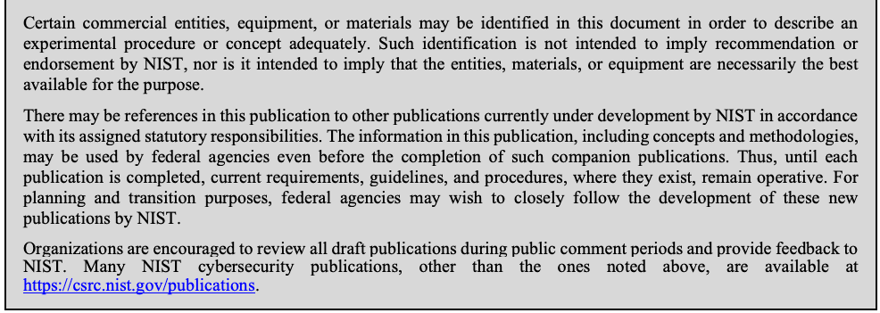
本文書では、実験の手順や概念を適切に説明するために、特定の商業団体、装置、資材が識別されている場合があります。このような識別は、NIST による推奨や承認を意味するものではなく、それらの団体、資材、装置が目的に照らして必ずしも最良であることを意味するものでもありません。
There may be references in this publication to other publications currently under development by NIST in accordance with its assigned statutory responsibilities. The information in this publication, including concepts and methodologies, may be used by federal agencies even before the completion of such companion publications. Thus, until each publication is completed, current requirements, guidelines, and procedures, where they exist, remain operative. For planning and transition purposes, federal agencies may wish to closely follow the development of these new publications by NIST.
本刊行物には、NIST が法令上の責務に従って現在策定中の他の刊行物への言及が含まれる場合があります。本刊行物の情報（概念や方法論を含む）は、そうした関連刊行物の完成前であっても、連邦機関が利用してよいです。したがって、各刊行物が完成するまでは、現行の要件、ガイドライン、手順が存在する場合には、それらが引き続き有効です。計画および移行のため、連邦機関は、NIST によるこれらの新しい刊行物の策定状況を注意深く追うことを検討してもよいです。
Organizations are encouraged to review all draft publications during public comment periods and provide feedback to NIST. Many NIST cybersecurity publications, other than the ones noted above, are available at https://csrc.nist.gov/publications.
組織は、パブリックコメント期間中にすべてのドラフト刊行物を確認し、NIST にフィードバックを提供することが推奨されます。上記以外にも、NIST のサイバーセキュリティ関連刊行物の多くが https://csrc.nist.gov/publications で入手できます。
Reports on Computer Systems Technology
コンピュータシステム技術に関する報告書
The Information Technology Laboratory (ITL) at the National Institute of Standards and Technology (NIST) promotes the U.S. economy and public welfare by providing technical leadership for the Nation’s measurement and standards infrastructure. ITL develops tests, test methods, reference data, proof of concept implementations, and technical analyses to advance the development and productive use of information technology. ITL’s responsibilities include the development of management, administrative, technical, and physical standards and guidelines for the cost-effective security and privacy of other than national security-related information in federal information systems.
National Institute of Standards and Technology（NIST）の Information Technology Laboratory（ITL）は、国の計測・標準インフラストラクチャに技術的なリーダーシップを提供することで、米国経済と公共の福祉の向上に貢献しています。ITL は、情報技術の発展と生産的な利用を促進するため、試験、試験方法、参照データ、概念実証実装、技術分析を開発しています。ITL の責務には、連邦情報システムにおける国家安全保障関連以外の情報について、そのセキュリティとプライバシーを費用対効果よく確保するための、管理上、運用上、技術上、物理上の標準およびガイドラインの策定が含まれます。
Abstract
概要
Organizational cybersecurity awareness (hereafter shortened to “security awareness”) programs may experience a number of challenges, including lack of funding and staff with the appropriate knowledge and skills to manage an effective program. While prior surveys and research have examined programs in the private sector, there is little understanding of whether these findings also apply within the U.S. government. To address this gap and better understand the needs, challenges, practices, and necessary competencies of federal security awareness teams and programs, NIST conducted a research study that leveraged both qualitative and quantitative methodologies. This companion document to NISTIR 8420 “Federal Cybersecurity Awareness Programs: A Mixed Methods Research Study” reports on a subset of study results focused on identifying the current job classifications, roles, and desired knowledge and skills for security awareness professionals within the federal government. Insights gained from these results are informing guidance and other initiatives to aid federal organizations in building security awareness teams with the appropriate competencies. While focused on the U.S. government, findings may also have implications for organizational security awareness professionals in other sectors.
組織のサイバーセキュリティ意識向上（以下「セキュリティ意識向上」と略す）プログラムは、資金の不足や、効果的なプログラムを運営するための適切な知識とスキルを持つ人員の不足など、数多くの課題に直面する場合があります。これまでの調査や研究では民間部門のプログラムが検討されてきましたが、これらの知見が米国政府内でも当てはまるのかについては、ほとんど分かっていません。このギャップに対処し、連邦のセキュリティ意識向上チームとプログラムのニーズ、課題、実践、必要なコンピテンシーをよりよく理解するため、NIST は、質的手法と量的手法の両方を活用した研究調査を実施しました。本文書は、NISTIR 8420『Federal Cybersecurity Awareness Programs: A Mixed Methods Research Study』の補足文書であり、連邦政府内のセキュリティ意識向上担当者について、現在の職種区分、役割、望まれる知識とスキルの特定に焦点を当てた調査結果の一部を報告します。これらの結果から得られた知見は、連邦組織が適切なコンピテンシーを備えたセキュリティ意識向上チームを構築するのを支援するガイダンスやその他の取り組みに反映されています。米国政府に焦点を当てていますが、調査結果は、他の分野の組織のセキュリティ意識向上担当者にも示唆を与える可能性があります。
Keywords
キーワード
cybersecurity; cybersecurity awareness; focus groups; knowledge; mixed methods; professional development; security professionals; skills; survey; training; usable cybersecurity; work roles
cybersecurity; cybersecurity awareness; focus groups; knowledge; mixed methods; professional development; security professionals; skills; survey; training; usable cybersecurity; work roles
Executive Summary
エグゼクティブサマリー
Security awareness programs aim to assist employees in recognizing and responding to security issues with a goal of achieving long-term behavior changes. Security awareness professionals are individuals who are tasked with managing and executing the security awareness programs within their organizations. Prior industry surveys and research studies have identified challenges security awareness professionals face. Many members of security awareness teams perform security awareness duties on a part-time basis without a job title that reflects their duties, and they may lack sufficient professional skills (e.g., communications, relationship-building) that were viewed as essential in security awareness roles. In addition, the lack of understanding that security awareness is a unique discipline may lead to ill-prepared awareness professionals. However, it is unclear if these challenges also apply to security awareness professionals in the United States (U.S.) government.
セキュリティ意識向上プログラムは、従業員がセキュリティ上の問題を認識して対応できるよう支援し、長期的な行動変容を達成することを目的としています。セキュリティ意識向上担当者とは、自らの組織内でセキュリティ意識向上プログラムの管理と実行を任されている個人です。これまでの業界調査や研究では、セキュリティ意識向上担当者が直面する課題が明らかにされています。セキュリティ意識向上チームの多くの構成員は、職務を反映した肩書きを持たないまま、セキュリティ意識向上の職務を兼務で担っており、セキュリティ意識向上の役割で不可欠とされる専門的なスキル（例: コミュニケーション、関係構築）が不足している場合があります。加えて、セキュリティ意識向上が固有の専門分野であることへの理解が欠けていると、意識向上担当者の準備が不十分になるおそれがあります。しかし、これらの課題が米国政府のセキュリティ意識向上担当者にも当てはまるかどうかは明らかではありません。
To better understand the needs, challenges, practices, and necessary competencies of federal security awareness teams and programs, we conducted a “mixed methods” research study that leveraged both qualitative and quantitative methodologies. We first conducted eight focus groups of federal employees who had security awareness duties or were managers or executives who oversaw the programs within their organizations. The focus groups then informed an online survey completed by 96 federal employees with security awareness responsibilities.
連邦のセキュリティ意識向上チームとプログラムのニーズ、課題、実践、必要なコンピテンシーをよりよく理解するため、私たちは、質的手法と量的手法の両方を活用した「混合研究法」の研究調査を実施しました。まず、セキュリティ意識向上の職務を担う、または組織内でそのプログラムを監督する管理者や幹部である連邦職員を対象に、8 回のフォーカスグループを実施しました。次に、フォーカスグループの結果を踏まえて、セキュリティ意識向上の責務を持つ連邦職員 96 名が回答するオンライン調査を実施しました。
The research background and methodologies for these two phases are described in detail in NISTIR 8420 “Federal Cybersecurity Awareness Programs: A Mixed Methods Research Study.” This companion document reports on a subset of results focused on identifying the current job classifications, security awareness roles, and desired knowledge and skills for security awareness professionals within the federal government. The following is a high-level overview of these results, with statistics from the survey unless otherwise indicated.
これら 2 つの段階の研究の背景と方法論は、NISTIR 8420『Federal Cybersecurity Awareness Programs: A Mixed Methods Research Study』に詳しく記載されています。本補足文書は、連邦政府内のセキュリティ意識向上担当者について、現在の職種区分、セキュリティ意識向上における役割、望まれる知識とスキルの特定に焦点を当てた結果の一部を報告します。以下は、これらの結果の概要であり、特に断りがない限り、調査の統計に基づいています。
Security Awareness Duties and Work Roles
セキュリティ意識向上の職務と職務上の役割
•90% of survey participants performed security awareness duties on a part-time basis, with just over 55% spending 25% or less of their time. Focus group participants had similar allocations: 93% part-time and 39% spending 25% of less time.
•調査参加者の 90% がセキュリティ意識向上の職務を兼務で担っており、25% 以下の時間しか割いていない参加者が 55% を少し上回りました。フォーカスグループの参加者でも同様の配分でした（兼務が 93%、時間の 25% 以下が 39%）。
•50% of survey participants either did not know or were not sure of their National Initiative for Cybersecurity Education (NICE) Workforce Framework for Cybersecurity (NICE Framework) Work Role. This was despite the Federal Cybersecurity Workforce Assessment Act which requires federal agencies to assign the NICE Framework coding structure to its cybersecurity and information technology (IT) positions. Those participants who knew their Work Role identified 11 unique Work Roles.
•調査参加者の 50% は、自分の National Initiative for Cybersecurity Education（NICE）の Workforce Framework for Cybersecurity（NICE フレームワーク）における Work Role を知らないか、確信がありませんでした。これは、連邦機関に対しサイバーセキュリティおよび情報技術（IT）の職位へ NICE フレームワークのコーディング構造を割り当てることを求める Federal Cybersecurity Workforce Assessment Act があるにもかかわらずです。自らの Work Role を把握していた参加者が挙げた Work Role は、重複を除いて 11 種類でした。
Professional Backgrounds
職歴
•Participants were diverse in their educational backgrounds, with 83% from focus group and 51% from the survey indicating that they have at least one non-STEM degree.
•参加者の学歴は多様であり、フォーカスグループの 83%、調査の 51% が、STEM 以外の学位を少なくとも 1 つ持っていると回答しました。
•92% of survey participants had worked in cybersecurity positions and 76% had worked in IT jobs that did not have a cybersecurity focus. Less than 25% had worked in a variety of other fields, including non-IT fields such as instructional design and education, communications, and human resources. We found that 40% of participants had only ever worked in a technical field (cybersecurity, IT, or software development).
•調査参加者の 92% がサイバーセキュリティの職位に就いた経験があり、76% がサイバーセキュリティに重点を置かない IT の職務に就いた経験がありました。25% 未満の参加者は、教育設計と教育、コミュニケーション、人事などの IT 以外の分野を含む、さまざまな他分野での経験がありました。参加者の 40% は、技術分野（サイバーセキュリティ、IT、ソフトウェア開発）でのみ働いた経験があることが分かりました。
Knowledge and Skills
知識とスキル
•Survey participants rated the importance of having specific knowledge and skills represented on their teams. Not surprisingly, cybersecurity, IT, and privacy knowledge and skills were overwhelming rated as important (over 95% for each). However, many professional knowledge and skills – interpersonal skills, communication skills, creativity, and contextual knowledge of the organization and policies – were also rated highly by over 95% of survey participants. Focus group participants particularly emphasized the importance of oral and written communication skills, for example, being able to translate highly technical information into a language understandable by a diverse workforce.
•調査参加者は、チームに特定の知識とスキルが備わっていることの重要性を評価しました。当然ながら、サイバーセキュリティ、IT、プライバシーの知識とスキルは、圧倒的に重要と評価されました（それぞれ 95% 超）。しかし、対人スキル、コミュニケーションスキル、創造性、組織とポリシーに関する文脈的な知識など、多くの専門的な知識とスキルも、調査参加者の 95% 超から高く評価されました。フォーカスグループの参加者は、特に口頭および文書でのコミュニケーションスキルの重要性を強調しました。たとえば、高度に技術的な情報を、多様な職員が理解できる言葉に翻訳できることです。
•61% of survey participants agreed that they have the right mix of skills and abilities within their security awareness teams. Participants mentioned it may be difficult to find a single individual who possesses all the necessary skills. Therefore, building a multi-disciplinary team or reaching out to other components in an organization, such as the human resources or public relations departments, can be beneficial.
•調査参加者の 61% は、自らのセキュリティ意識向上チームに適切なスキルと能力の組み合わせが備わっていることに同意しました。参加者は、必要なスキルをすべて備えた個人を 1 人見つけることは困難な場合があると述べました。そのため、多分野にわたるチームを構築したり、人事部門や広報部門など組織内の他の部門に協力を求めたりすることが有益な場合があります。
•70% of survey participants agreed that they were provided with adequate professional development opportunities. However, due to budgetary constraints or lack of specific role-based training, a few participants expressed difficulties obtaining security awareness-specific trainings.
•調査参加者の 70% は、適切な能力開発の機会が提供されていることに同意しました。しかし、予算上の制約や、役割に特化したトレーニングの不足により、セキュリティ意識向上に特化したトレーニングを受けることが難しいと述べた参加者も少数いました。
This report can serve as a resource for federal security awareness professionals, organizational decision makers, policy makers, and guidance developers to: improve professional development activities for those with security awareness duties; inform hiring decisions for security awareness positions; and advocate for federal security awareness professionals. The results may also be valuable to security awareness professionals outside of the government who face similar challenges.
本報告書は、連邦のセキュリティ意識向上担当者、組織の意思決定者、政策立案者、ガイダンス作成者にとって、セキュリティ意識向上の職務を担う人々の能力開発活動の改善、セキュリティ意識向上の職位の採用判断への情報提供、連邦のセキュリティ意識向上担当者の擁護に役立つ資料となりえます。この結果は、同様の課題に直面する政府外のセキュリティ意識向上担当者にとっても価値がある場合があります。
Table of Contents
目次
List of Appendices
付録一覧
List of Figures
図の一覧
1 Introduction
1 はじめに
Cybersecurity awareness (hereafter shortened to “security awareness”) programs aim to help employees recognize and appropriately respond to security issues, with a goal of achieving long-term behavior change [WILSON]. Security awareness professionals are individuals who are tasked with managing and executing the security awareness programs within their organizations. Prior industry surveys and research studies have identified challenges security awareness professionals face. Many professionals perform security awareness duties on a part-time basis without a job title that reflects their duties, and they may lack sufficient professional skills (e.g., communications, relationship-building) that are viewed as essential in security awareness roles [SANS][WOELK]. In addition, the lack of understanding that security awareness is a unique discipline may lead to ill-prepared awareness professionals [BADA]. However, it is unclear if these challenges also apply to security awareness professionals in the United States (U.S.) government.
サイバーセキュリティ意識向上（以下「セキュリティ意識向上」と略す）プログラムは、従業員がセキュリティ上の問題を認識して適切に対応できるよう支援し、長期的な行動変容を達成することを目的としています [WILSON]。セキュリティ意識向上担当者とは、自らの組織内でセキュリティ意識向上プログラムの管理と実行を任されている個人です。これまでの業界調査や研究では、セキュリティ意識向上担当者が直面する課題が明らかにされています。多くの担当者は、職務を反映した肩書きを持たないまま、セキュリティ意識向上の職務を兼務で担っており、セキュリティ意識向上の役割で不可欠とされる専門的なスキル（例: コミュニケーション、関係構築）が不足している場合があります [SANS][WOELK]。加えて、セキュリティ意識向上が固有の専門分野であることへの理解が欠けていると、意識向上担当者の準備が不十分になるおそれがあります [BADA]。しかし、これらの課題が米国政府のセキュリティ意識向上担当者にも当てはまるかどうかは明らかではありません。
To better understand the needs, challenges, practices, and necessary competencies of federal security awareness teams and programs, we conducted a “mixed methods” research study that leveraged both qualitative and quantitative methodologies. The National Institute of Standards and Technology (NIST) Research Protections Office reviewed the protocol for this research project (ITL-2020-0238) and determined it meets the criteria for “exempt human subjects research” as defined in 15 CFR 27, the Common Rule for the Protection of Human Subjects.
連邦のセキュリティ意識向上チームとプログラムのニーズ、課題、実践、必要なコンピテンシーをよりよく理解するため、私たちは、質的手法と量的手法の両方を活用した「混合研究法」の研究調査を実施しました。National Institute of Standards and Technology（NIST）の Research Protections Office は、この研究プロジェクト（ITL-2020-0238）のプロトコルを審査し、15 CFR 27（人を対象とする研究の保護に関する共通規則）に定義される「免除対象の人を対象とする研究」の基準を満たすと判断しました。
We conducted the study in two sequential phases from December 2020 – July 2021. In the first phase, we collected qualitative data via eight focus groups with federal employees who had security awareness duties or were managers or executives who oversaw the programs within their organizations. Focus groups provided an understanding of current security awareness approaches within the government and the concepts and challenges viewed as most important by participants. These insights then informed a second phase consisting of a follow-on, online survey completed by 96 federal employees involved in their security awareness programs.
本調査は、2020年12月から2021年7月にかけて、2 つの段階に分けて順次実施しました。第 1 段階では、セキュリティ意識向上の職務を担う、または組織内でそのプログラムを監督する管理者や幹部である連邦職員を対象とした 8 回のフォーカスグループにより、質的データを収集しました。フォーカスグループにより、政府内の現在のセキュリティ意識向上のアプローチと、参加者が最も重要と考える概念や課題を理解することができました。これらの知見を踏まえて、第 2 段階では、自らのセキュリティ意識向上プログラムに関わる連邦職員 96 名が回答する、後続のオンライン調査を実施しました。
The research background and methodologies (study design, recruitment, data collection, and data analysis) employed for these two phases are described in detail in NISTIR 8420 “Federal Cybersecurity Awareness Programs: A Mixed Methods Research Study.” This companion document, NISTIR 8420B, reports on a subset of results focused on identifying the current job classifications, security awareness roles, National Initiative for Cybersecurity Education (NICE) Workforce Framework for Cybersecurity (NICE Framework) Work Roles, and desired knowledge and skills for security awareness professionals within the federal government. Specifically, these results answer the following research questions:
これら 2 つの段階で用いた研究の背景と方法論（調査設計、参加者募集、データ収集、データ分析）は、NISTIR 8420『Federal Cybersecurity Awareness Programs: A Mixed Methods Research Study』に詳しく記載されています。補足文書である本 NISTIR 8420B は、連邦政府内のセキュリティ意識向上担当者について、現在の職種区分、セキュリティ意識向上における役割、National Initiative for Cybersecurity Education（NICE）の Workforce Framework for Cybersecurity（NICE フレームワーク）の Work Role、望まれる知識とスキルの特定に焦点を当てた結果の一部を報告します。具体的には、これらの結果は次のリサーチクエスチョンに答えるものです。
1.What job classifications and NICE Work Roles do federal security awareness professionals currently have?
1.連邦のセキュリティ意識向上担当者は、現在どのような職種区分と NICE の Work Role を持っていますか。
2.What are the professional backgrounds of these professionals?
2.これらの担当者の職歴はどのようなものですか。
3.What are the desired knowledge and skills of federal security awareness professionals?
3.連邦のセキュリティ意識向上担当者に望まれる知識とスキルは何ですか。
4.What professional development activities do these professionals engage in and do they feel those are adequate?
4.これらの担当者はどのような能力開発活動に取り組んでおり、それらが十分だと感じていますか。
Study results will inform guidance to aid federal organizations in building security awareness teams with the appropriate competencies.
調査結果は、連邦組織が適切なコンピテンシーを備えたセキュリティ意識向上チームを構築するのを支援するガイダンスに反映されます。
The report is organized as follows. Section 2 describes conventions used when reporting results. Section 3 reports participant demographics, including security awareness roles, job classifications and NICE Framework Work Roles, and professional backgrounds. Section 4 describes study results related to knowledge, skills, and professional development activities of federal security awareness professionals. Section 5 summarizes key takeaways from the study.
本報告書の構成は次のとおりです。第 2 節では、結果を報告する際の表記規則を説明します。第 3 節では、セキュリティ意識向上における役割、職種区分と NICE フレームワークの Work Role、職歴を含む、参加者の属性を報告します。第 4 節では、連邦のセキュリティ意識向上担当者の知識、スキル、能力開発活動に関する調査結果を説明します。第 5 節では、調査から得られた主な要点をまとめます。
The target audience of this report consists of individuals involved with federal security awareness programs. The report can serve as a resource for federal security awareness professionals, managers, and organizational decision makers to: improve professional development activities for those with security awareness duties; inform hiring decisions for security awareness positions; and advocate for their organizations’ security awareness professionals. Those who develop and manage federal security awareness guidance, policies, sharing forums, and initiatives may also benefit. In addition, the report may be valuable to security awareness professionals outside of the government.
本報告書の対象読者は、連邦のセキュリティ意識向上プログラムに関わる人々です。本報告書は、連邦のセキュリティ意識向上担当者、管理者、組織の意思決定者にとって、セキュリティ意識向上の職務を担う人々の能力開発活動の改善、セキュリティ意識向上の職位の採用判断への情報提供、自らの組織のセキュリティ意識向上担当者の擁護に役立つ資料となりえます。連邦のセキュリティ意識向上のガイダンス、ポリシー、情報共有の場、取り組みを策定し管理する人々にも有益な場合があります。加えて、本報告書は、政府外のセキュリティ意識向上担当者にとっても価値がある場合があります。
2 Reporting Conventions
2 報告の表記規則
Because participants had the option of skipping survey questions, participants may not have answered all questions. Therefore, we include the number of responses (n) for each question with our summary statistics.
調査の参加者は質問を飛ばすことができたため、すべての質問に回答していない場合があります。そのため、要約統計量には、各質問の回答数（n）を併記しています。
Inferential statistics were calculated for select questions to look for differences between the following groups:
次のグループ間の違いを調べるため、一部の質問について推測統計量を算出しました。
•Organization type
•組織の種類
•Department
•省庁（Department）
•Sub-component
•下部組織（Sub-component）
•Independent agency
•独立機関（Independent agency）
•Program size - based on number of employees (federal employees and contractors) covered under the organization’s security awareness program
•プログラムの規模 - 組織のセキュリティ意識向上プログラムの対象となる従業員数（連邦職員と契約業者）に基づく
•Small – Less than 1,000 employees
•小規模 – 従業員 1,000 人未満
•Medium – 1,000 – 4,999 employees
•中規模 – 従業員 1,000～4,999 人
•Large – 5,000 – 29,999 employees
•大規模 – 従業員 5,000～29,999 人
•Very Large – 30,000+ employees
•超大規模 – 従業員 30,000 人以上
•Team size - the number of individuals directly tasked with security awareness duties
•チームの規模 - セキュリティ意識向上の職務を直接任されている人数
•Very small – 1-2 people
•極小規模 – 1～2 人
•Small – 3-5 people
•小規模 – 3～5 人
•Medium – 6 – 10 people
•中規模 – 6～10 人
•Large – More than 10 people
•大規模 – 10人を超える人員
See NISTIR 8420 for details on statistical tests and level of significance.
統計的検定と有意水準の詳細は、NISTIR 8420 を参照してください。
The results of statistical analyses are highlighted in gray text boxes, with statements of statistically significant results in bold.
原本PDFの抜粋画像
統計分析の結果は灰色のテキストボックスで強調して示し、統計的に有意な結果を述べた文は太字にしています。
Direct quotes from the focus groups and open-ended questions in the survey are included where appropriate to further support or provide more insight into quantitative survey results. Quotes from the survey are attributed to individual survey participants by denoting an anonymous identifier consisting of “Q” followed by the participant number (e.g., Q48). In attributing quotes to focus group participants, individuals from Independent agencies are identified as N01 – N12, Department-level organizations as D01 – D06, and Sub-components as S01 – S11.
フォーカスグループおよび調査の自由回答式の質問からの直接引用は、量的な調査結果を裏付けたり、より深い洞察を提供したりするために、適宜含めています。調査からの引用は、「Q」に参加者番号を続けた匿名の識別子（例: Q48）で、個々の調査参加者に帰属させています。フォーカスグループ参加者の発言については、独立機関の参加者を N01～N12、省庁レベルの組織の参加者を D01～D06、下部組織の参加者を S01～S11 として識別しています。
3 Professional Demographics
3 専門職としての属性
Focus group participants were asked to complete a short online survey to collect demographic information, including their current job roles and professional backgrounds. Survey participants provided similar information within the survey itself. In a few instances, demographic questions not included in the focus groups were added in the survey and vice-versa. For example, in the survey, we added questions to better understand which NICE Framework Work Roles are commonly assigned to those involved in federal security awareness programs. In this section, we differentiate between data collected in the focus groups and the survey.
フォーカスグループの参加者には、現在の職務上の役割や職歴などの属性情報を収集する短いオンライン調査への回答を依頼しました。調査の参加者は、調査自体の中で同様の情報を提供しました。フォーカスグループに含まれなかった属性に関する質問を調査に追加した例や、その逆の例が、数件あります。たとえば、調査では、連邦のセキュリティ意識向上プログラムに関わる人々に一般的に割り当てられている NICE フレームワークの Work Role をよりよく理解するための質問を追加しました。本節では、フォーカスグループで収集したデータと調査で収集したデータを区別して示します。
The demographics in this report focus on a set of data relevant to discovering the current roles and professional backgrounds of those working in security awareness within the U.S. government. Other data related to the organizations and teams represented in the study (e.g., types of organizations, organization and program size, security awareness team size) are reported in NISTIR 8420.
本報告書の属性は、米国政府内でセキュリティ意識向上に携わる人々の現在の役割と職歴を明らかにするのに関連するデータに焦点を当てています。本調査に参加した組織とチームに関するその他のデータ（例: 組織の種類、組織とプログラムの規模、セキュリティ意識向上チームの規模）は、NISTIR 8420 で報告しています。
3.1 Security Awareness Duties
3.1 セキュリティ意識向上の職務
3.1.1 Security Awareness Roles and Percentage of Time
3.1.1 セキュリティ意識向上における役割と時間の割合
Security awareness roles and percentage of time spent on security awareness duties are described in NISTIR 8420. Because these demographics are useful for contextualizing the results in this report, for ease of reference, Figure 1 summarizes the represented roles and Figure 2 summarizes percentages of time (one focus group participant did not answer this question).
セキュリティ意識向上における役割と、セキュリティ意識向上の職務に費やす時間の割合は、NISTIR 8420 に記載されています。これらの属性は本報告書の結果の文脈を理解するのに役立つため、参照しやすいように、図 1 に参加者の役割を、図 2 に時間の割合を要約しています（フォーカスグループの参加者 1 名がこの質問に回答しませんでした）。
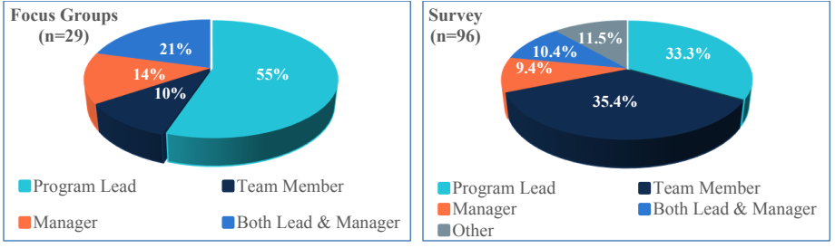
2つの立体円グラフを左右に並べた図です。左は「Focus Groups (n=29)」（フォーカスグループ）で、Program Lead（プログラムリーダー）55%、Both Lead & Manager（リーダー兼管理者）21%、Manager（管理者）14%、Team Member（チームメンバー）10% です。右は「Survey (n=96)」（調査）で、Team Member 35.4%、Program Lead 33.3%、Other（その他）11.5%、Both Lead & Manager 10.4%、Manager 9.4% です。凡例は Program Lead、Team Member、Manager、Both Lead & Manager（調査のグラフには Other も）です。
Figure 1: Security awareness roles - Focus groups (left), Survey (right)
図 1: セキュリティ意識向上における役割 - フォーカスグループ（左）、調査（右）
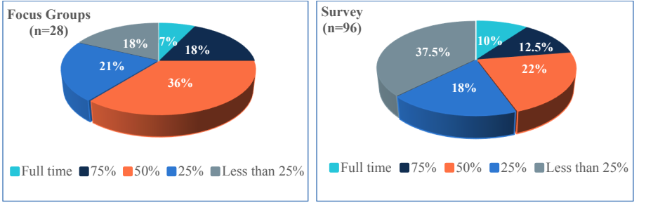
2つの立体円グラフを左右に並べた図です。左は「Focus Groups (n=28)」（フォーカスグループ）で、50% が 36%、25% が 21%、75% が 18%、Less than 25%（25% 未満）が 18%、Full time（専任）が 7% です。右は「Survey (n=96)」（調査）で、Less than 25% が 37.5%、50% が 22%、25% が 18%、75% が 12.5%、Full time が 10% です。凡例はどちらも Full time、75%、50%、25%、Less than 25% です。
Figure 2: Time spent on security awareness duties - Focus groups (left), Survey (right)
図 2: セキュリティ意識向上の職務に費やす時間 - フォーカスグループ（左）、調査（右）
3.1.2 Years of Security Awareness Experience
3.1.2 セキュリティ意識向上の経験年数
Focus Groups
フォーカスグループ
When asked how long they had been involved in security awareness programs, all focus group participants indicated that they had at least one year of experience, with 69% having at least 6 years of experience. Figure 3 shows the distribution of years of experience.
セキュリティ意識向上プログラムにどのくらいの期間関わってきたかを尋ねたところ、フォーカスグループの参加者全員が少なくとも 1 年の経験があると回答し、69% が少なくとも 6 年の経験を持っていました。図 3 に経験年数の分布を示します。
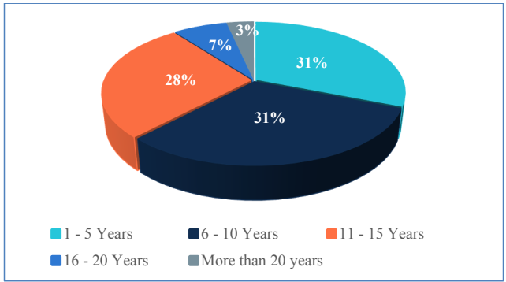
立体円グラフです。1 - 5 Years（1〜5 年）31%、6 - 10 Years（6〜10 年）31%、11 - 15 Years（11〜15 年）28%、16 - 20 Years（16〜20 年）7%、More than 20 years（20 年超）3% です。
Figure 3: Focus Groups - Years involved with security awareness programs (n=29)
図 3: フォーカスグループ - セキュリティ意識向上プログラムに関わった年数（n=29）
Survey
調査
Participants tended to be quite experienced working with security awareness programs, with 74% indicating six or more years of experience. Figure 4 shows the distribution of years of experience. Only one participant had less than one year of experience.
参加者は、セキュリティ意識向上プログラムでの経験がかなり豊富な傾向にあり、74% が 6 年以上の経験があると回答しました。図 4 に経験年数の分布を示します。経験が 1 年未満の参加者は 1 名のみでした。
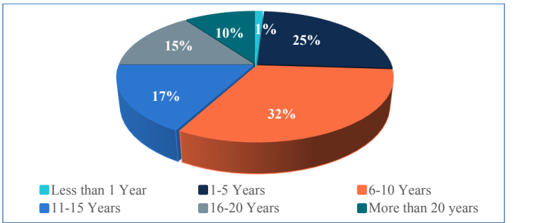
立体円グラフです。6-10 Years（6〜10 年）32%、1-5 Years（1〜5 年）25%、11-15 Years（11〜15 年）17%、16-20 Years（16〜20 年）15%、More than 20 years（20 年超）10%、Less than 1 Year（1 年未満）1% です。
Figure 4: Survey - Years involved with security awareness programs (n=96)
図 4: 調査 - セキュリティ意識向上プログラムに関わった年数（n=96）
3.2 Work Roles
3.2 職務上の役割
This section describes the job classifications and NICE Framework Work Roles held by participants at the time of the study.
本節では、調査の時点で参加者が持っていた職種区分と NICE フレームワークの Work Role を説明します。
3.2.1 Job Classifications
3.2.1 職種区分
Focus Groups
フォーカスグループ
Focus group participants indicated their job title in a fill-in-the-blank style question. Because of the open-endedness of the responses, job titles were of varying granularity. Some were job classifications (e.g., “IT Specialist”) while others named their functional role (e.g., “Manager, Awareness and Training”). We categorized the job titles of the 29 participants into the following breakdown (job category followed by number of participants):
フォーカスグループの参加者は、穴埋め形式の質問で自らの職名を回答しました。回答が自由記述であったため、職名の粒度はさまざまでした。職種区分（例: 「IT Specialist」）のものもあれば、機能上の役割（例: 「Manager, Awareness and Training」）を挙げたものもありました。29 名の参加者の職名を、次のように分類しました（職種のカテゴリに続けて参加者数を示します）。
•Training Lead/Manager (n=9)
•トレーニングのリーダー／管理者（n=9）
•IT Specialist (n=8)
•IT Specialist（n=8）
•Other Security (n=4)
•その他のセキュリティ職（n=4）
•Supervisory IT Specialist (n=2)
•Supervisory IT Specialist（n=2）
•Chief Information Security Officer (CISO) (n=3)
•最高情報セキュリティ責任者（CISO）（n=3）
•Other Manager (n=3)
•その他の管理職（n=3）
In an open-ended question, we also asked what other job functions or roles the participants had in addition to their security awareness responsibilities. All but two participants had other substantial cybersecurity duties beyond awareness training, for example, incident response, supply chain risk management, audits and compliance, policy, information systems security management, privacy awareness and training, cybersecurity role-based training, and project management.
自由記述式の質問では、セキュリティ意識向上の責務に加えて、参加者がほかにどのような職務や役割を担っているかも尋ねました。2 名を除くすべての参加者が、意識向上トレーニング以外にも、インシデント対応、サプライチェーンのリスクマネジメント、監査とコンプライアンス、ポリシー、情報システムのセキュリティ管理、プライバシーに関する意識向上およびトレーニング、サイバーセキュリティの役割別トレーニング、プロジェクト管理など、サイバーセキュリティに関する相当な職務を担っていました。
Survey
調査
The survey deviated from the focus group in that it asked about official job classification and roles in “select all that apply” (rather than open-ended) questions. As shown in Figure 5, when selecting their job classification, half selected IT Specialist (Cybersecurity). Supervisory IT Specialist (Cybersecurity) was the second most common response at 20%. Figure 5 shows all job classification responses. Three job classifications listed in the survey were not selected by any participants: IT Specialist (Other), Computer Scientist, and Supervisory IT Specialist (Other).
調査では、公式の職種区分と役割を、（自由記述ではなく）「当てはまるものをすべて選択」する質問で尋ねた点が、フォーカスグループとは異なっていました。図 5 に示すとおり、職種区分の選択では、半数が IT Specialist (Cybersecurity) を選択しました。2 番目に多い回答は Supervisory IT Specialist (Cybersecurity) で、20% でした。図 5 にすべての職種区分の回答を示します。調査に挙げた職種区分のうち、IT Specialist (Other)、Computer Scientist、Supervisory IT Specialist (Other) の 3 つは、どの参加者にも選択されませんでした。
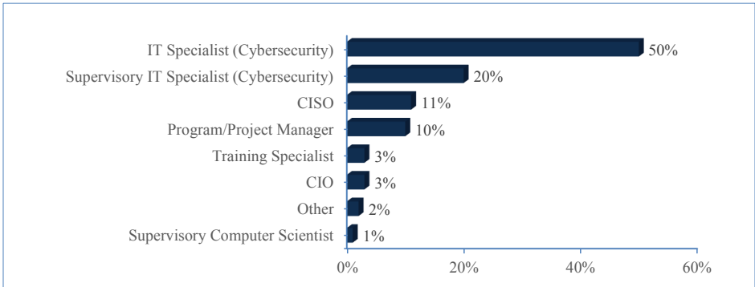
横棒グラフです。上から順に IT Specialist (Cybersecurity)（IT 専門職（サイバーセキュリティ）） 50%、Supervisory IT Specialist (Cybersecurity)（監督職の IT 専門職（サイバーセキュリティ）） 20%、CISO 11%、Program/Project Manager（プログラム／プロジェクトマネージャー） 10%、Training Specialist（研修専門職） 3%、CIO 3%、Other（その他） 2%、Supervisory Computer Scientist（監督職のコンピューター科学者） 1% です。横軸の目盛りは 0%, 20%, 40%, 60% です。
Figure 5: Survey - Job classification (n=94)
図 5: 調査 - 職種区分（n=94）
Figure 6, Figure 7, Figure 8, and Figure 9 show the job classification breakdowns by security awareness role. More than half of participants identifying as Program Lead or Team Member had the job classification of IT Specialist (Cybersecurity). Unsurprisingly, all but one of the nine managers selected supervisory or executive job classifications. Job classifications for those acting as both a Lead and Manager were distributed across six different classifications.
図 6、図 7、図 8、図 9 に、セキュリティ意識向上における役割別の職種区分の内訳を示します。プログラムリードまたはチームメンバーであると回答した参加者の半数超が、IT Specialist (Cybersecurity) の職種区分でした。当然ながら、管理者 9 名のうち 1 名を除くすべてが、監督職または幹部職の職種区分を選択しました。リードと管理者の両方を兼ねる参加者の職種区分は、6 つの異なる区分に分布していました。
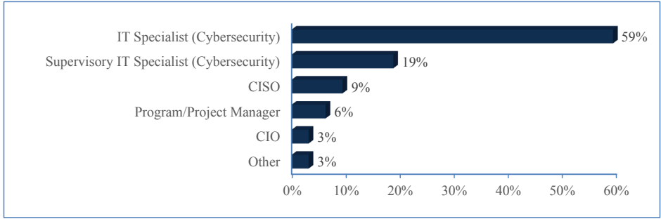
横棒グラフです。上から順に IT Specialist (Cybersecurity)（IT 専門職（サイバーセキュリティ）） 59%、Supervisory IT Specialist (Cybersecurity)（監督職の IT 専門職（サイバーセキュリティ）） 19%、CISO 9%、Program/Project Manager（プログラム／プロジェクトマネージャー） 6%、CIO 3%、Other（その他） 3% です。横軸の目盛りは 0% から 60% まで 10% 刻み です。
Figure 6: Survey - Job classifications of Program Leads (n=32)
図 6: 調査 - プログラムリードの職種区分（n=32）
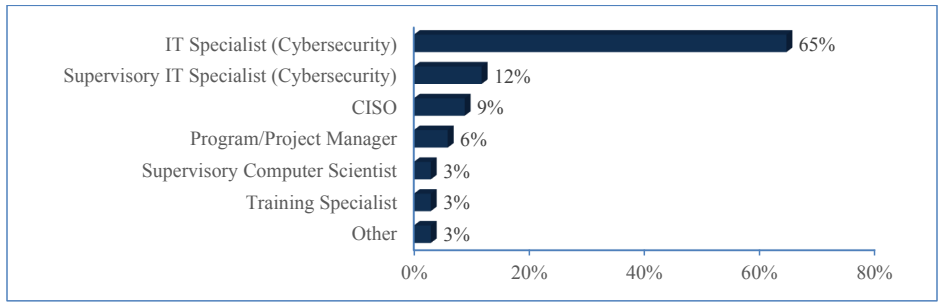
横棒グラフです。上から順に IT Specialist (Cybersecurity)（IT 専門職（サイバーセキュリティ）） 65%、Supervisory IT Specialist (Cybersecurity)（監督職の IT 専門職（サイバーセキュリティ）） 12%、CISO 9%、Program/Project Manager（プログラム／プロジェクトマネージャー） 6%、Supervisory Computer Scientist（監督職のコンピューター科学者） 3%、Training Specialist（研修専門職） 3%、Other（その他） 3% です。横軸の目盛りは 0%, 20%, 40%, 60%, 80% です。
Figure 7: Survey - Job classifications of Team Members (n=34)
図 7: 調査 - チームメンバーの職種区分（n=34）
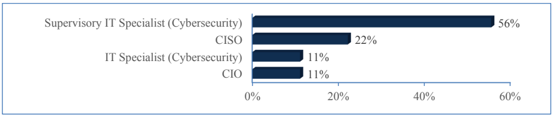
横棒グラフです。上から順に Supervisory IT Specialist (Cybersecurity)（監督職の IT 専門職（サイバーセキュリティ）） 56%、CISO 22%、IT Specialist (Cybersecurity)（IT 専門職（サイバーセキュリティ）） 11%、CIO 11% です。横軸の目盛りは 0%, 20%, 40%, 60% です。
Figure 8: Survey - Job classifications of Managers/Executives (n=9)
図 8: 調査 - 管理者／幹部の職種区分（n=9）
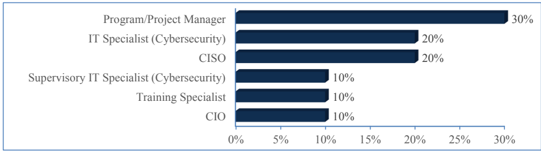
横棒グラフです。上から順に Program/Project Manager（プログラム／プロジェクトマネージャー） 30%、IT Specialist (Cybersecurity)（IT 専門職（サイバーセキュリティ）） 20%、CISO 20%、Supervisory IT Specialist (Cybersecurity)（監督職の IT 専門職（サイバーセキュリティ）） 10%、Training Specialist（研修専門職） 10%、CIO 10% です。横軸の目盛りは 0% から 30% まで 5% 刻み です。
Figure 9: Survey - Job classifications of participants who are both Program Leads and Managers/Executives (n=10)
図 9: 調査 - プログラムリードと管理者／幹部の両方を兼ねる参加者の職種区分（n=10）
3.2.2 NICE Framework Work Roles
3.2.2 NICE フレームワークの Work Role
In the survey only, we asked participants if they were assigned a NICE Framework Work Role. Of the 96 participants who responded, 50% said “Yes,” 29% said “No,” and 21% responded “I don’t know” (Figure 10).
調査でのみ、参加者に NICE フレームワークの Work Role が割り当てられているかを尋ねました。回答した 96 名のうち、50% が「はい」、29% が「いいえ」、21% が「分からない」と回答しました（図 10）。
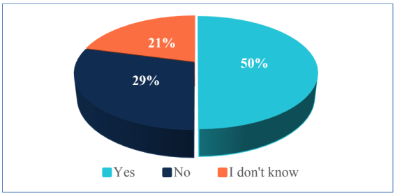
立体円グラフです。Yes（はい）50%、No（いいえ）29%、I don't know（わからない）21% です。
Figure 10: Survey - Assigned to a NICE Framework Work Role (n=96)
図 10: 調査 - NICE フレームワークの Work Role への割り当て状況（n=96）
Those who answered affirmatively were then asked which Work Role(s) they were assigned, with 45 participants responding. Twenty participants (44%) selected two or more Work Roles. Figure 11 shows the distribution of Work Roles. Information Systems Security Manager was the most common role at 40%, followed by Cyber Policy and Strategy Manager (29%) and Cyber Workforce Developer and Manager (22%). Nine other Work Roles were selected.
肯定的に回答した参加者には、さらに割り当てられている Work Role を尋ね、45 名が回答しました。20 名（44%）が 2 つ以上の Work Role を選択しました。図 11 に Work Role の分布を示します。最も多かったのは Information Systems Security Manager で 40%、次いで Cyber Policy and Strategy Manager（29%）、Cyber Workforce Developer and Manager（22%）でした。ほかに 9 つの Work Role が選択されました。
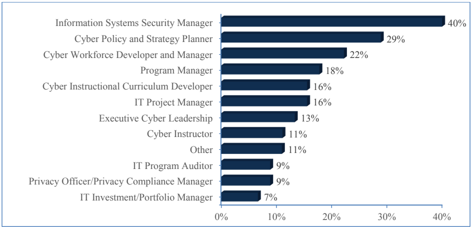
横棒グラフです。上から順に Information Systems Security Manager（情報システムセキュリティマネージャー） 40%、Cyber Policy and Strategy Planner（サイバー政策・戦略プランナー） 29%、Cyber Workforce Developer and Manager（サイバー人材開発者・マネージャー） 22%、Program Manager（プログラムマネージャー） 18%、Cyber Instructional Curriculum Developer（サイバー教育カリキュラム開発者） 16%、IT Project Manager（IT プロジェクトマネージャー） 16%、Executive Cyber Leadership（サイバー経営幹部） 13%、Cyber Instructor（サイバー講師） 11%、Other（その他） 11%、IT Program Auditor（IT プログラム監査人） 9%、Privacy Officer/Privacy Compliance Manager（プライバシー責任者／プライバシーコンプライアンスマネージャー） 9%、IT Investment/Portfolio Manager（IT 投資／ポートフォリオマネージャー） 7% です。横軸の目盛りは 0%, 10%, 20%, 30%, 40% です。
Figure 11: Survey - NICE Framework Work Roles (n=45)
図 11: 調査 - NICE フレームワークの Work Role（n=45）
We also looked more granularly at which Work Roles were assigned to the various security awareness roles (Table 1). Of particular interest, 40% of those responding who had program lead responsibilities reported as having the Information Systems Security Manager (ISSM) role, one third had the Cyber Workforce Developer and Manager role, and 27% held the Cyber Policy and Strategy Planner role. ISSM was the predominant Work Role among security awareness team members (61%), followed by Cyber Policy and Strategy Planner (33%). Note that, given most participants only work part-time on security awareness, some of these Work Roles may not be directly associated with participants’ security awareness duties, but rather their other cybersecurity duties.
また、セキュリティ意識向上における各役割にどの Work Role が割り当てられているかも、より詳細に調べました（表 1）。特に注目されるのは、プログラムリードの責務を持つ回答者の 40% が Information Systems Security Manager（ISSM）の役割を担っていると報告し、3 分の 1 が Cyber Workforce Developer and Manager の役割を、27% が Cyber Policy and Strategy Planner の役割を担っていたことです。セキュリティ意識向上のチームメンバーの間では、ISSM が主要な Work Role（61%）で、次いで Cyber Policy and Strategy Planner（33%）でした。ただし、参加者の大半はセキュリティ意識向上を兼務で行っているにすぎないため、これらの Work Role の一部は、参加者のセキュリティ意識向上の職務とは直接関係せず、その他のサイバーセキュリティの職務に関係している可能性があります。
Table 1: Survey – Number of NICE Framework Work Roles for each security awareness role (n=45)
表 1: 調査 – セキュリティ意識向上の各役割における NICE フレームワークの Work Role の人数（n=45）
| Program Lead | Team Member | Manager or Executive | Program Lead & Manager | Other Role | |
|---|---|---|---|---|---|
| Cyber Instructional Curriculum Developer | 3 | 3 | 1 | 0 | 0 |
| Cyber Instructor | 2 | 1 | 1 | 0 | 1 |
| Cyber Policy and Strategy Planner | 3 | 6 | 1 | 1 | 2 |
| Cyber Workforce Developer and Manager | 5 | 3 | 1 | 0 | 1 |
| Executive Cyber Leadership | 1 | 0 | 2 | 3 | 0 |
| Information Systems Security Manager | 3 | 11 | 0 | 3 | 1 |
| IT Investment/Portfolio Manager | 1 | 1 | 0 | 1 | 0 |
| IT Program Auditor | 1 | 1 | 0 | 0 | 2 |
| IT Project Manager | 1 | 2 | 2 | 1 | 1 |
| Privacy Officer or Privacy Compliance Manager | 2 | 1 | 0 | 0 | 1 |
| Program Manager | 1 | 4 | 0 | 2 | 1 |
| Other | 0 | 1 | 1 | 0 | 3 |
| (n=10) | (n=18) | (n=5) | (n=5) | (n=7) |
| プログラムリード | チームメンバー | 管理者または幹部 | プログラムリードと管理者 | その他の役割 | |
|---|---|---|---|---|---|
| Cyber Instructional Curriculum Developer | 3 | 3 | 1 | 0 | 0 |
| Cyber Instructor | 2 | 1 | 1 | 0 | 1 |
| Cyber Policy and Strategy Planner | 3 | 6 | 1 | 1 | 2 |
| Cyber Workforce Developer and Manager | 5 | 3 | 1 | 0 | 1 |
| Executive Cyber Leadership | 1 | 0 | 2 | 3 | 0 |
| Information Systems Security Manager | 3 | 11 | 0 | 3 | 1 |
| IT Investment/Portfolio Manager | 1 | 1 | 0 | 1 | 0 |
| IT Program Auditor | 1 | 1 | 0 | 0 | 2 |
| IT Project Manager | 1 | 2 | 2 | 1 | 1 |
| Privacy Officer or Privacy Compliance Manager | 2 | 1 | 0 | 0 | 1 |
| Program Manager | 1 | 4 | 0 | 2 | 1 |
| その他 | 0 | 1 | 1 | 0 | 3 |
| (n=10) | (n=18) | (n=5) | (n=5) | (n=7) |
3.3 Professional Backgrounds
3.3 職歴
Participants answered questions about their professional backgrounds, including their formal education, job experience, experience working in security awareness, and industry-recognized certifications.
参加者は、正規の学歴、職務経験、セキュリティ意識向上に携わった経験、業界で認められた資格を含む、職歴に関する質問に回答しました。
3.3.1 Education
3.3.1 学歴
Focus Groups
フォーカスグループ
The focus group demographic survey asked about participants’ educational background. All but three of the focus group participants had a bachelor’s degree or higher (Figure 12).
フォーカスグループの属性調査では、参加者の学歴を尋ねました。3 名を除くすべてのフォーカスグループ参加者が、学士以上の学位を持っていました（図 12）。
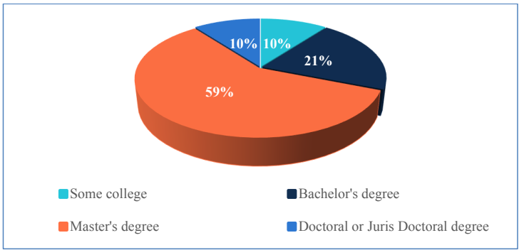
立体円グラフです。Master's degree（修士号）59%、Bachelor's degree（学士号）21%、Some college（大学中退・在学経験あり）10%、Doctoral or Juris Doctoral degree（博士号または法務博士号）10% です。
Figure 12: Focus Groups - Level of education (n=29)
図 12: フォーカスグループ - 教育水準（n=29）
Participants were also asked in which disciplines or fields they held post-secondary school degrees. We organized responses to this open-ended question into three categories:
参加者には、中等後教育の学位をどの専攻分野で取得したかも尋ねました。この自由記述式の質問への回答を、次の 3 つのカテゴリに整理しました。
•Computing-related fields (e.g., Computer Science, Computer Engineering, Information Technology, Cybersecurity, Information Systems)
•コンピューティング関連分野（例: コンピュータサイエンス、コンピュータ工学、情報技術、サイバーセキュリティ、情報システム）
•Other Science, Technology, Engineering, and Mathematics (STEM) fields (e.g., Chemistry, Mathematics, Mechanical Engineering, Physics)
•その他の科学・技術・工学・数学（STEM）分野（例: 化学、数学、機械工学、物理学）
•Non-STEM fields (e.g., Business, Psychology, Education)
•STEM 以外の分野（例: ビジネス、心理学、教育）
Of the 23 valid responses, 83% of participants had at least one non-STEM degree, and just under half (48%) held a degree in a computing-related field (Figure 13). Note that, because this was an open-ended question, participants may not have entered in all their degrees if they had received multiple degrees. For example, in some instances, participants only entered an advanced degree (e.g., “MBA”) without specifying their bachelor’s degree field. Responses that only indicated a type of degree (e.g., “BS”) without a discipline were excluded from the count.
有効回答 23 件のうち、83% の参加者が STEM 以外の学位を少なくとも 1 つ持っており、半数弱（48%）がコンピューティング関連分野の学位を持っていました（図 13）。ただし、これは自由記述式の質問であったため、複数の学位を取得している参加者が、すべての学位を記入していない可能性があります。たとえば、学士の専攻分野を明記せず、上位の学位（例: 「MBA」）のみを記入した例がありました。専攻分野を記さず学位の種類（例: 「BS」）のみを示した回答は、集計から除外しました。
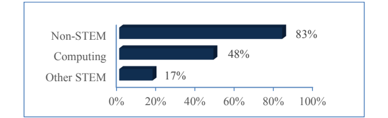
横棒グラフです。上から順に Non-STEM（STEM 以外） 83%、Computing（コンピューティング） 48%、Other STEM（その他の STEM） 17% です。横軸の目盛りは 0% から 100% まで 20% 刻み です。
Figure 13: Focus Groups - Degree disciplines (n=23)
図 13: フォーカスグループ - 学位の専攻分野（n=23）
Survey
調査
In the survey, we were more interested in degree disciplines versus the type of degree. Figure 14 shows represented degree disciplines among survey participants as indicated in an open-ended question. Of the 80 participants responding, 56% had at least one computing degree, and 51% had a degree in a non-STEM field. Twenty-two participants (28%) earned at least one degree in both a computing/STEM discipline and a non-STEM discipline.
調査では、学位の種類よりも学位の専攻分野に関心がありました。図 14 に、自由記述式の質問で示された調査参加者の学位の専攻分野を示します。回答した 80 名のうち、56% がコンピューティング分野の学位を少なくとも 1 つ持ち、51% が STEM 以外の分野の学位を持っていました。22 名（28%）は、コンピューティング／STEM 分野と STEM 以外の分野の両方で、少なくとも 1 つの学位を取得していました。
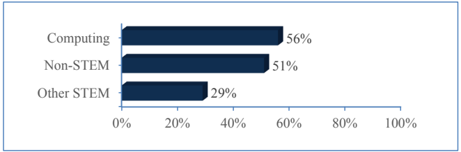
横棒グラフです。上から順に Computing（コンピューティング） 56%、Non-STEM（STEM 以外） 51%、Other STEM（その他の STEM） 29% です。横軸の目盛りは 0% から 100% まで 20% 刻みです。
Figure 14: Survey - Degree disciplines (n=80)
図 14: 調査 - 学位の専攻分野（n=80）
3.3.2 Job Experience
3.3.2 職務経験
Focus Groups
フォーカスグループ
In the focus group demographic survey, we asked participants how many years they had worked as government employees, in their current organization, and in a cybersecurity role. Eighty-three percent (n=24) of focus group participants had worked as federal employees for more than five years (21% for more than 20 years). Seventy-two percent (n=21) had worked in their current organization for more than five years (14% for more than 20 years). All but three participants had worked in some kind of cybersecurity role for at least 6 years, with 28% with more than 20 years of cybersecurity experience.
フォーカスグループの属性調査では、参加者に、政府職員としての勤続年数、現在の組織での勤続年数、サイバーセキュリティの役割での勤続年数を尋ねました。フォーカスグループ参加者の 83%（n=24）が、連邦職員として 5 年を超えて勤務しており（21% は 20 年超）、72%（n=21）が現在の組織で 5 年を超えて勤務していました（14% は 20 年超）。3 名を除くすべての参加者が、何らかのサイバーセキュリティの役割で少なくとも 6 年間働いた経験があり、28% はサイバーセキュリティの経験が 20 年を超えていました。
Survey
調査
In the survey, we opted to focus more on capturing the diversity of participants’ professional backgrounds rather than number of years having worked in the government or an organization. Participants selected fields they had worked in professionally over the course of their career (Figure 15). Almost all participants (92%) have worked in cybersecurity and 76% have worked in IT jobs that did not have a cybersecurity focus. Participants also selected a variety of other fields, including non-IT fields such as instructional design/education, communications, and human resources. We found that 40% of participants (n = 38) had only worked in a technical field (cybersecurity, IT, or software development).
調査では、政府や組織での勤続年数よりも、参加者の職歴の多様性を把握することに重点を置きました。参加者は、キャリアを通じて職業として従事した分野を選択しました（図 15）。ほぼ全員（92%）がサイバーセキュリティの分野で働いた経験があり、76% がサイバーセキュリティに重点を置かない IT の職務で働いた経験がありました。参加者は、教育設計／教育、コミュニケーション、人事などの IT 以外の分野を含む、さまざまな他分野も選択しました。参加者の 40%（n = 38）は、技術分野（サイバーセキュリティ、IT、ソフトウェア開発）でのみ働いた経験があることが分かりました。
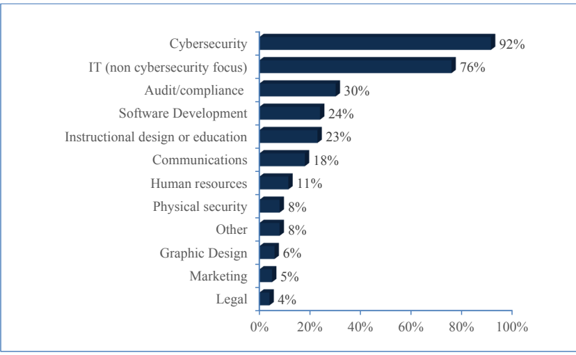
横棒グラフです。上から順に Cybersecurity（サイバーセキュリティ） 92%、IT (non cybersecurity focus)（IT（サイバーセキュリティ以外）） 76%、Audit/compliance（監査／コンプライアンス） 30%、Software Development（ソフトウェア開発） 24%、Instructional design or education（インストラクショナルデザインまたは教育） 23%、Communications（コミュニケーション） 18%、Human resources（人事） 11%、Physical security（物理セキュリティ） 8%、Other（その他） 8%、Graphic Design（グラフィックデザイン） 6%、Marketing（マーケティング） 5%、Legal（法務） 4% です。横軸の目盛りは 0% から 100% まで 20% 刻みです。
Figure 15: Survey - Fields worked in professionally (n=96)
図 15: 調査 - 職業として従事した分野（n=96）
3.3.3 Industry-recognized Certifications
3.3.3 業界で認められた資格
Focus Groups
フォーカスグループ
In an open-ended question, participants were asked what, if any, industry-recognized certifications they held (Figure 16). The Certified Information Systems Security Professional (CISSP) certification was the most common certification at 65%. Certified Information Security Manager (CISM) was the second most commonly held certification at 29%. The “Other” category includes certifications only mentioned by one or two individuals.
自由記述式の質問で、参加者に、業界で認められた資格を持っている場合はそれが何かを尋ねました（図 16）。Certified Information Systems Security Professional（CISSP）が 65% で最も多い資格でした。Certified Information Security Manager（CISM）は 29% で、2 番目に多く保有されていた資格でした。「その他」のカテゴリには、1 名または 2 名のみが挙げた資格が含まれます。
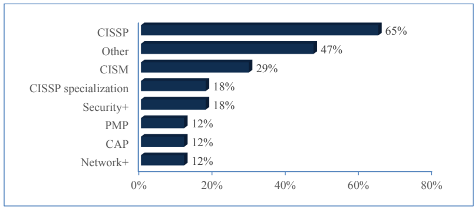
横棒グラフです。上から順に CISSP 65%、Other（その他） 47%、CISM 29%、CISSP specialization（CISSP の専門資格） 18%、Security+ 18%、PMP 12%、CAP 12%、Network+ 12% です。横軸の目盛りは 0%, 20%, 40%, 60%, 80% です。
Figure 16: Focus Groups - Industry-recognized certifications (n=17)
図 16: フォーカスグループ - 業界で認められた資格（n=17）
Survey
調査
Survey participants were able to select certifications from a list as well as being able to enter other certifications in an “Other” field. As depicted in Figure 17, the Certified Information Systems Security Professional (CISSP) was the most commonly held certification at 46%, followed by Security+ at 29%. Twenty percent did not have an industry-recognized certification.
調査の参加者は、一覧から資格を選択できたほか、「その他」の欄に別の資格を入力することもできました。図 17 に示すとおり、Certified Information Systems Security Professional（CISSP）が 46% で最も多く保有されている資格で、次いで Security+ が 29% でした。20% は、業界で認められた資格を持っていませんでした。
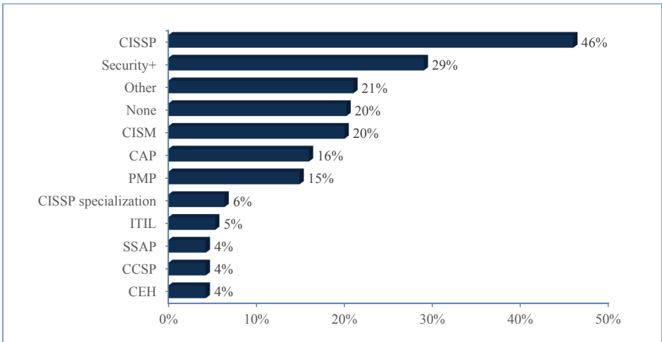
横棒グラフです。上から順に CISSP 46%、Security+ 29%、Other（その他） 21%、None（なし） 20%、CISM 20%、CAP 16%、PMP 15%、CISSP specialization（CISSP の専門資格） 6%、ITIL 5%、SSAP 4%、CCSP 4%、CEH 4% です。横軸の目盛りは 0% から 50% まで 10% 刻み です。
Figure 17: Survey - Industry-recognized certifications (n=94)
図 17: 調査 - 業界で認められた資格（n=94）
4 Knowledge, Skills, and Professional Development
4 知識、スキル、能力開発
This section describes study results related to the knowledge, skills, and professional development opportunities of security awareness professionals. The results are organized according to the survey structure, with all statistics based on survey data.
本節では、セキュリティ意識向上担当者の知識、スキル、能力開発の機会に関する調査結果を説明します。結果は調査の構成に沿って整理しており、すべての統計は調査データに基づいています。
4.1 Knowledge and Skills Importance Ratings
4.1 知識とスキルの重要度評価
We asked participants to rate the importance of having certain knowledge and skills held by individuals in their security awareness teams on a four-point scale ranging from “not important at all” to “high importance.” These knowledge and skills were originally identified in the focus groups. In a follow-on, open-ended question, participants also had the opportunity to add other knowledge or skills they believed to be of high importance. Twenty-five participants offered additional thoughts, although some input just provided additional detail on knowledge/skills categories already included in the rating question. In this section, we organize the knowledge and skills into three categories – technical, professional, and contextual – and provide participant quotes for additional detail. When reporting those skills deemed “important,” we are referring to those marked as having high or moderate importance by participants.
参加者に、セキュリティ意識向上チームの構成員が持つ特定の知識とスキルの重要性を、「まったく重要でない」から「重要度が高い」までの 4 段階で評価するよう依頼しました。これらの知識とスキルは、もともとフォーカスグループで特定されたものです。後続の自由記述式の質問では、参加者が重要度が高いと考えるその他の知識やスキルを追加する機会も設けました。25 名の参加者が追加の意見を寄せましたが、一部は、評価の質問にすでに含まれていた知識／スキルのカテゴリの詳細を補足するだけのものでした。本節では、知識とスキルを技術的、専門的、文脈的の 3 つのカテゴリに整理し、詳細を補うために参加者の発言を引用します。「重要」とみなされたスキルを報告する際は、参加者が重要度「高」または「中」とした項目を指します。
4.1.1 Technical Knowledge and Skills
4.1.1 技術的な知識とスキル
Figure 18 shows how survey participants rated the importance of several categories of technical knowledge and skills: cybersecurity, privacy, and IT.
図 18 に、サイバーセキュリティ、プライバシー、IT という、技術的な知識とスキルのいくつかのカテゴリについて、調査参加者が重要度をどのように評価したかを示します。
![100% stacked horizontal bar chart of importance ratings. Cybersecurity knowledge/skills (n=75): Moderate importance 21%, High importance 79%. Privacy knowledge/skills (n=76): Low importance 4%, Moderate importance 39%, High importance 57%. IT knowledge/skills (n=75): Low importance 3%, Moderate importance 51%, High importance 47%. Horizontal axis 0% to 100% in steps of 20%. Legend: Not important at all (dark red), Low importance (light orange), Moderate importance (light blue), High importance (dark blue).](assets/ir-8420b/p0022-figure-01.png)
重要度の評価を示す 100% 積み上げ横棒グラフです。Cybersecurity knowledge/skills（サイバーセキュリティの知識・スキル、n=75）は Moderate importance 21%、High importance 79% です。Privacy knowledge/skills（プライバシーの知識・スキル、n=76）は Low importance 4%、Moderate importance 39%、High importance 57% です。IT knowledge/skills（IT の知識・スキル、n=75）は Low importance 3%、Moderate importance 51%、High importance 47% です。横軸は 0% から 100% まで 20% 刻みです。凡例は Not important at all（まったく重要でない、濃い赤）、Low importance（重要度低、薄い橙）、Moderate importance（重要度中、薄い青）、High importance（重要度高、紺）です。
Figure 18: Technical knowledge/skills importance ratings
図 18: 技術的な知識／スキルの重要度評価
Cybersecurity: Not surprisingly given the focus of the role, cybersecurity knowledge was overall rated the most important (100% moderate/high importance) and had the largest percentage of participants rating it as having high importance (79%).
サイバーセキュリティ: この役割の焦点を考えれば当然のことですが、サイバーセキュリティの知識は全体として最も重要と評価され（重要度「中」または「高」が 100%）、重要度「高」と評価した参加者の割合も最大でした（79%）。
When asked what knowledge or skills was needed for security awareness professionals, focus group participants often mentioned expertise in cybersecurity:
セキュリティ意識向上担当者にどのような知識やスキルが必要かを尋ねられたとき、フォーカスグループの参加者は、サイバーセキュリティの専門知識をしばしば挙げました。
“[It’s important to have] a fundamental cybersecurity knowledge component because I've had both feds and contractors who were great creative content organizers, but they didn't understand enough about cybersecurity to know when they were writing the training. Or even if it was a training session that I wrote and gave it to them, some of it wouldn't make sense to them… And it has taken some time to bring non-cybersecurity knowledge individuals up to speed to where I can say, ‘Here, write me something on this subject,’ and it'll come back in a fairly decent format.” (D06)
「[重要なのは] サイバーセキュリティの基礎知識という要素を備えていることです。というのも、連邦職員にも契約業者にも、創造的なコンテンツを整理する力は優れているのに、トレーニングを書く際に、サイバーセキュリティについて十分に理解していないために、(内容が) 分からない人たちがいたからです。私が書いてその人たちに渡したトレーニングセッションでさえ、一部は彼らには意味が通じないことがありました……。サイバーセキュリティの知識がない人たちを、『このテーマで何か書いてください』と頼めば、そこそこ見られる形式で返ってくる状態まで引き上げるには、しばらく時間がかかりました。」（D06）
“I think you need someone who is able to converse with network engineers, incident response teams, and when those people start talking about like FIPS [Federal Information Processing Standards] encryption or cloud infrastructure or something like that.” (S06)
「ネットワークエンジニアやインシデント対応チームと会話ができる人が必要だと思います。彼らが FIPS [Federal Information Processing Standards] の暗号化やクラウドインフラストラクチャなどについて話し始めたときにも、です。」（S06）
“I would say that having a background in cybersecurity does help when you are developing content because I believe that people should have an understanding of the content they're developing.” (S10)
「サイバーセキュリティの素養があることは、コンテンツを作成する際に役立つと言えます。作成するコンテンツの内容を理解しておくべきだと考えているからです。」（S10）
However, not all participants felt that deep cybersecurity knowledge was required for the security awareness role:
しかし、セキュリティ意識向上の役割に深いサイバーセキュリティの知識が必要だと感じているわけではない参加者もいました。
“We can rely on [training vendors], and all the other companies for that [cybersecurity-specific] material.” (N03)
「その [サイバーセキュリティ固有の] 教材については、[トレーニングベンダー] やその他すべての企業に頼ることができます。」（N03）
“I'm not a SME [subject matter expert] in any of these areas per se. I am more so the coordinator of the training so I can connect these needs with those that need the information. But I am not a Unix administrator. I am not a network engineer. So, I can take my best guess. I have a CISSP. I know what you're talking about. I'm just not a SME in that area. I cannot deliver the training myself.” (S08)
「私は、これらの分野のいずれにおいても、特に SME [subject matter expert: 分野の専門家] ではありません。どちらかといえばトレーニングのコーディネーターで、こうしたニーズを、情報を必要とする人たちにつなぐ役割です。私は Unix 管理者でもネットワークエンジニアでもありません。ですから、自分なりに推測はできます。私は CISSP を持っていて、話の内容は分かります。ただ、その分野の SME ではないのです。自分でトレーニングを行うことはできません。」（S08）
Information Technology: IT knowledge and skills were also highly rated (98% moderate/high importance). Participants often valued team members with knowledge of IT (e.g., software, network technologies) and associated data analysis, which they could apply to the program:
情報技術: IT の知識とスキルも高く評価されました（重要度「中」または「高」が 98%）。参加者は、IT（例: ソフトウェア、ネットワーク技術）と、それに関連するデータ分析の知識を持つチームメンバーを、プログラムに活かせる人材として重んじることが多くありました。
“[We need] people who are familiar with different applications and how to use SharePoint and how to administer things in a way that are accessible to people. My example now is trying to update our materials so that they can be viewed on mobile devices. We're lucky to have somebody on our team who's technical and can actually implement that.” (D03)
「[必要なのは] さまざまなアプリケーションに精通し、SharePoint の使い方や、人々が利用しやすい形で物事を管理する方法を知っている人たちです。今の私の例は、資料をモバイル端末で閲覧できるように更新しようとしていることです。技術に明るく、実際にそれを実装できる人がチームにいるのは幸運です。」（D03）
“Having a computer science background has helped me in my position. And it's helped me from collaborating with others and pushing my own agenda to automate things, to collaborating with others on content, and so forth.” (S11)
「コンピュータサイエンスの素養は、私の職務で役立ってきました。また、自動化を進めるという自分の方針を推し進めるために他の人たちと協力することから、コンテンツなどについて他の人たちと協力することまで、役立ってきました。」（S11）
“Cybersecurity is not as important as maybe a basic understanding of data and how to manipulate it so that we can report on this and see how effective the things are.” (N03)
「サイバーセキュリティそのものよりも、おそらくデータとその扱い方に関する基本的な理解のほうが重要です。そうすれば、報告を行い、取り組みがどれだけ効果的かを把握できるからです。」（N03）
Privacy: Privacy knowledge and skills were likewise rated as important (96% moderate/high importance). Privacy training often falls under the duties of security awareness teams:
プライバシー: プライバシーの知識とスキルも同様に重要と評価されました（重要度「中」または「高」が 96%）。プライバシーのトレーニングは、セキュリティ意識向上チームの職務に含まれることが多くあります。
“We have one annual course, and we've bundled a lot of training requirements in this one course. It's security awareness, privacy, incident response, rules of behavior, all these things in one course.” (S06)
「年に 1 回の講座があり、多くのトレーニング要件をこの 1 つの講座にまとめています。セキュリティ意識向上、プライバシー、インシデント対応、行動規範といったすべてを 1 つの講座に入れています。」（S06）
“We have a privacy awareness day during the year.” (S03)
「年に一度、プライバシー意識向上デーを設けています。」（S03）
“In the ISA [information security awareness] training, we included PII [personally identifiable information] and privacy training. However, recently, I guess, this year, we created a PII course that will be mandated by everyone in our agency.” (S09)
「ISA [情報セキュリティ意識向上] トレーニングには、PII [個人を特定できる情報] とプライバシーのトレーニングを含めていました。ただ、最近、今年だったと思いますが、機関の全員に受講が義務づけられる PII の講座を作りました。」（S09）
Because of the increased focus on privacy training within government organizations, one focus group participant expressed concern that there are few resources for ensuring team members have the appropriate privacy-related knowledge and skills:
政府組織ではプライバシーのトレーニングへの注目が高まっているため、あるフォーカスグループの参加者は、チームメンバーが適切なプライバシー関連の知識とスキルを持っていることを確保するためのリソースが少ないことへの懸念を示しました。
“For this relatively newer area, which has to do with the competency of privacy workforce, currently, outside of the International Association for Privacy Professionals, I don't think there exists a good mechanism or assessment for the privacy workforce as of yet. So, for example, we have cybersecurity personnel who may be inheriting privacy responsibilities, but we don't have a tool yet that will help us gauge what their level of knowledge is with regards to privacy.” (S11)
「プライバシー人材のコンピテンシーに関わるこの比較的新しい分野については、現時点では、International Association for Privacy Professionals の外には、プライバシー人材のための優れたしくみや評価が、まだ存在しないと思います。たとえば、プライバシーの責任を引き継いでいる可能性のあるサイバーセキュリティ担当者がいますが、彼らのプライバシーに関する知識レベルを測るのに役立つツールが、まだありません。」（S11）
4.1.2 Professional Knowledge and Skills
4.1.2 専門的な知識とスキル
Professional knowledge and skills (sometimes called “soft” or “non-technical” skills) are those used by individuals to relate to their environment and the people around them [INDEED]. In the survey, participants were asked to rate the following professional skills: written and oral communication skills; program management; creativity and adaptability; interpersonal skills; moderating and group facilitation; and contextual knowledge of cybersecurity policies and the organization’s mission, processes, and dynamics. Figure 19 shows ratings for each item.
専門的な知識とスキル（「ソフト」スキルまたは「非技術的」スキルと呼ばれることもあります）とは、個人が自らの環境や周囲の人々と関わるために用いるものです [INDEED]。調査では、参加者に次の専門的スキルを評価するよう依頼しました。文書および口頭でのコミュニケーションスキル、プログラム管理、創造性と適応力、対人スキル、司会進行とグループファシリテーション、サイバーセキュリティポリシーならびに組織の使命、プロセス、組織内の関係性に関する文脈的な知識です。図 19 に各項目の評価を示します。
![100% stacked horizontal bar chart of importance ratings. Written communication skills (n=75): Low importance (small, unlabeled), Moderate importance 27%, High importance 72%. Oral communication skills(n=75): Low importance 4%, Moderate importance 27%, High importance 69%. Program management skills (n=76): Not important at all (small, unlabeled), Low importance 11%, Moderate importance 49%, High importance 39%. Creativity & adaptability (n=75): Low importance 4%, Moderate importance 52%, High importance 44%. Interpersonal skills (n=76): Low importance 4%, Moderate importance 45%, High importance 51%. Moderating/group facilitation skills (n=75): Not important at all (small, unlabeled), Low importance 25%, Moderate importance 48%, High importance 25%. Knowledge of cybersecurity policies (n=75): Low importance 3%, Moderate importance 24%, High importance 73%. Knowledge of org mission & processes (n=74): Low importance 7%, Moderate importance 31%, High importance 62%. Horizontal axis 0% to 100% in steps of 20%. Legend: Not important at all (dark red), Low importance (light orange), Moderate importance (light blue), High importance (dark blue).](assets/ir-8420b/p0024-figure-01.png)
重要度の評価を示す 100% 積み上げ横棒グラフです。Written communication skills（文章でのコミュニケーションスキル、n=75）は Low importance（小さく値の表示なし）、Moderate importance 27%、High importance 72% です。Oral communication skills（口頭でのコミュニケーションスキル、n=75）は Low importance 4%、Moderate importance 27%、High importance 69% です。Program management skills（プログラム管理スキル、n=76）は Not important at all（小さく値の表示なし）、Low importance 11%、Moderate importance 49%、High importance 39% です。Creativity & adaptability（創造性と適応力、n=75）は Low importance 4%、Moderate importance 52%、High importance 44% です。Interpersonal skills（対人スキル、n=76）は Low importance 4%、Moderate importance 45%、High importance 51% です。Moderating/group facilitation skills（司会・グループファシリテーションのスキル、n=75）は Not important at all（小さく値の表示なし）、Low importance 25%、Moderate importance 48%、High importance 25% です。Knowledge of cybersecurity policies（サイバーセキュリティポリシーの知識、n=75）は Low importance 3%、Moderate importance 24%、High importance 73% です。Knowledge of org mission & processes（組織の使命とプロセスの知識、n=74）は Low importance 7%、Moderate importance 31%、High importance 62% です。横軸は 0% から 100% まで 20% 刻みです。凡例は Not important at all（まったく重要でない、濃い赤）、Low importance（重要度低、薄い橙）、Moderate importance（重要度中、薄い青）、High importance（重要度高、紺）です。
Figure 19: Professional knowledge/skills importance ratings
図 19: 専門的な知識／スキルの重要度評価
Communication skills: Communication skills were rated highly by survey participants: 99% rating written communication skills as moderately/highly important and 96% for oral communication skills. Moderating and group facilitation skills were viewed as important by fewer participants (73% moderate/high importance).
コミュニケーションスキル: コミュニケーションスキルは調査参加者から高く評価されました。文書でのコミュニケーションスキルを重要度「中」または「高」とした割合は 99%、口頭でのコミュニケーションスキルでは 96% でした。司会進行とグループファシリテーションのスキルを重要とみなした参加者は、それより少数でした（重要度「中」または「高」が 73%）。
The importance of communication skills, particularly being able to translate highly technical information into a language understandable by a diverse workforce, was frequently mentioned by survey and focus group participants:
コミュニケーションスキルの重要性、特に、高度に技術的な情報を多様な職員が理解できる言葉に翻訳できることは、調査およびフォーカスグループの参加者からしばしば言及されました。
“You also need employees who understand cybersecurity and are able to communicate it in a way that your average employee can understand. So that's really an important skill.” (D01)
「サイバーセキュリティを理解しており、それを平均的な従業員が理解できる形で伝えられる職員も必要です。それは本当に重要なスキルです。」（D01）
“Skills to translate technical speak into plain language” (Q40).
「技術的な専門用語を平易な言葉に翻訳するスキル」（Q40）。
“Some of my team members have English backgrounds or writing backgrounds, which helps them to write things in a way that, A) people can understand but, B) aren't necessarily open for interpretation.” (D03)
「私のチームメンバーの中には、英語分野や文章作成の分野の経歴を持つ人がいて、そのおかげで、A) 人々が理解でき、B) 必ずしも解釈の余地を残さない書き方ができます。」（D03）
“For me, not only having a background in IT security but having somebody who is capable of clearly communicating the security awareness. Like I currently have somebody on staff who is very excited, has fabulous ideas, and can be the most confusing person when trying to communicate the actual piece of the security awareness. So, you certainly don't want to have just that wall of text…You get eyes glazed over.” (D04)
「私にとっては、IT セキュリティの素養があるだけでなく、セキュリティ意識向上を明確に伝えられる人がいることが重要です。たとえば、今、私のスタッフに、とても熱意があり、素晴らしいアイデアを持っているのに、セキュリティ意識向上の肝心な部分を伝えようとすると、最も分かりにくくなってしまう人がいます。ですから、文字の壁のようなものだけは絶対に避けたいのです……。みんな目がうつろになってしまいます。」（D04）
“I think communication skills, not just for putting the right words in the material and into the training deck itself, but if you do get helpdesk calls about, ‘Why is this? What is that?’ you need to be able to feel that and communicate on a professional level as well.” (N08)
「コミュニケーションスキルは、資料やトレーニング用スライドに適切な言葉を盛り込むためだけでなく、『これはなぜですか。あれは何ですか』といったヘルプデスクへの問い合わせがあったときにも、相手の状況を感じ取り、専門的なレベルで伝えられるようにするために必要だと思います。」（N08）
“Ability to really lead those information sessions for the users and answer all the questions.” (S05)
「利用者向けの説明会を実際に主導し、あらゆる質問に答える能力。」（S05）
Creativity and adaptability: Participants also viewed creativity and being open to adapting the program to the needs of the workforce as important competencies (96% moderate/high importance). Several participants commented on these:
創造性と適応力: 参加者はまた、創造性と、職員のニーズに合わせてプログラムを調整することに前向きであることも、重要なコンピテンシーとみなしました（重要度「中」または「高」が 96%）。複数の参加者がこれについて述べました。
“Creativity. A lot of what you put out is visual. It might be online training or posters or…websites, posters on websites. So it needs to be engaging.” (D01)
「創造性です。発信するものの多くは視覚的なものです。オンライントレーニングやポスター、あるいは……ウェブサイトやウェブサイト上のポスターかもしれません。ですから、人を引きつけるものでなければなりません。」（D01）
“I would like to just have more creative staff available to work with to maybe stand up a specialized website for security training with the resources.” (D05)
「リソースを備えたセキュリティトレーニング専用ウェブサイトを立ち上げるために、もっと創造的なスタッフと一緒に仕事ができればと思います。」（D05）
“I would say also being open to different perspectives of something that maybe you are already sure is working perfectly, but someone might come along with a different perspective altogether that might make something easier or work better.” (S05)
「すでに完璧に機能していると確信しているものに対しても、異なる視点を受け入れる姿勢が大切だとも思います。まったく別の視点を持つ人が現れて、物事をより簡単に、あるいはより良く機能させてくれるかもしれませんから。」（S05）
“Be creative, open minded, and willing to fail and learn from those failures…Cybersecurity and related vulnerabilities are constantly changing so your program needs to be flexible…Having a solid team that is creative overcomes the lack of funds.” (Q35)
「創造的で、柔軟な考え方を持ち、失敗を恐れず、その失敗から学ぶこと……。サイバーセキュリティと関連する脆弱性は常に変化しているので、プログラムは柔軟でなければなりません……。創造的で堅実なチームがあれば、資金の不足を克服できます。」（Q35）
Interpersonal skills: Interpersonal skills were rated as moderately or highly important by 96% of survey participants. Participants expanded on these skills, citing empathy, building relationships, networking/collaboration, customer service, patience, and listening skills.
対人スキル: 対人スキルは、調査参加者の 96% が重要度「中」または「高」と評価しました。参加者はこれらのスキルについて詳しく述べ、共感、関係構築、ネットワーキング／協力、顧客サービス、忍耐力、傾聴のスキルを挙げました。
“I know I have to hunt users down every single year for CSAT and be nice about it too…Just every single day for an entire month, I try to communicate with user, ‘Hey, you haven't taken your CSAT yet. How about it?’ Or I'm educating a user tomorrow who her director flagged her as having failed a few phishing exercises, and she does not want to be trained. So how do I address that? How do I stay friendly with her, and not make her angry with me while complying with her director's requests or requirements?” (N03)
「毎年 CSAT のために利用者を追いかけなければならず、しかも感じよくそれをしなければならないことは承知しています……。ひと月の間、毎日ずっと利用者に『CSAT がまだ終わっていませんよ。どうですか』と連絡しています。あるいは明日、部長からいくつかのフィッシング演習に失敗したと指摘された女性利用者を教育する予定ですが、彼女は教育を受けたくないのです。では、どう対応すればよいのでしょうか。部長の依頼や要求に応じながら、彼女を怒らせず、友好的な関係を保つにはどうすればよいのでしょうか。」（N03）
“Customer service skills, just dealing with some of the frustration from our workforce and having to complete these annual type trainings. Being able to be patient and work with them.” (S02)
「顧客サービスのスキルです。毎年のこうしたトレーニングを受けなければならないことに対する職員の不満に対処し、辛抱強く彼らと付き合えることです。」（S02）
“Empathy for employees.” (Q29)
「従業員への共感。」（Q29）
“They have to have patience. You’ve got to be able to engage other people other than security nerds and professionals.” (N07)
「忍耐力が必要です。セキュリティオタクや専門家以外の人たちとも関われなければなりません。」（N07）
“Collaboration - that's key - building those relationships, and collaborating with others, particularly, in my instance, where there's various business units. And getting those folks engaged and working with them to build a better experience is really imperative.” (S11)
「協力が鍵です。関係を築き、他の人たちと協力することです。特に私の場合は、さまざまな事業部門があるので。そうした人たちを巻き込み、一緒に取り組んでより良い体験を作り上げることが、本当に不可欠です。」（S11）
“Be consistent, have patience, learn all you can about the program and have customer service skills.” (S09)
「一貫性を保ち、忍耐力を持ち、プログラムについてできる限り学び、顧客サービスのスキルを身につけること。」（S09）
Program Management: Eighty-eight percent of survey respondents viewed program management skills as important. Several focus group participants commented on the importance of this skill:
プログラム管理: 調査回答者の 88% が、プログラム管理のスキルを重要とみなしました。複数のフォーカスグループ参加者が、このスキルの重要性について述べました。
“I think they would have to be a strong project manager or COR [contract officer’s representative] because those are the things that in order to run a program, you might not be able to contract. You don't want the contractor pushing your project. You want your fed person doing that.” (D01)
「優れたプロジェクトマネージャーか COR [契約担当官代理] である必要があると思います。プログラムを運営するために、契約では対応できない事柄があるからです。契約業者にプロジェクトを主導させたくはありません。連邦職員に主導してもらいたいのです。」（D01）
“I'm thinking a little bit of project management skills because they need to coordinate with the people who actually do the workday in and day out. So, I don't expect for them to match to everything cybersecurity, that is if they'd be able to manage the project and manage the people. I think that's probably the biggest skill that's needed.” (N06)
「プロジェクト管理のスキルが少し必要だと考えています。日々実際に業務を行っている人たちと調整する必要があるからです。ですから、サイバーセキュリティに関するあらゆることに通じていることまでは期待していません。つまり、プロジェクトと人を管理できればよいのです。それが恐らく最も必要なスキルだと思います。」（N06）
“Logistics and event planning are key KSA [knowledge, skills, and abilities] areas.” (Q56)
「ロジスティクスとイベントの企画は、重要な KSA [知識、スキル、能力] の領域です。」（Q56）
Contextual Knowledge: Having knowledge of relevant cybersecurity policies was viewed as important by 97% of survey participants. Knowledge of organizational context – including mission, processes, and dynamics – was rated important by 93%. Several participants commented on this organizational knowledge:
文脈的な知識: 関連するサイバーセキュリティポリシーの知識を持つことは、調査参加者の 97% が重要とみなしました。使命、プロセス、組織内の関係性を含む組織の文脈に関する知識は、93% が重要と評価しました。複数の参加者が、この組織に関する知識について述べました。
“A part of a requirement for my job as well, that I need to be able to interpret policy in a nutshell to help the users.” (S05)
「利用者を助けるために、ポリシーを簡潔に解釈できることも、私の職務要件の一部です。」（S05）
“Having knowledge of internal policies and procedures is certainly something that a candidate should have.” (S11)
「社内のポリシーや手順に関する知識は、候補者が備えているべきものです。」（S11）
“Understanding what the culture is. So like if the culture is more of a, ‘Well, we've always done things the same way,’ then you need to understand that going in when you're creating the program.” (N10)
「文化がどのようなものかを理解することです。たとえば、『これまでずっと同じやり方でやってきた』という文化であれば、プログラムを作る際に、最初にそれを理解しておく必要があります。」（N10）
“Understand the federal mandates and the organizational culture towards training. These to [sic] aspects are crucial to how you develop or mature your program” (Q44)
「連邦政府の義務づけと、トレーニングに対する組織の文化を理解すること。これら 2 つの側面 [sic] は、プログラムをどのように開発し、成熟させるかにとって極めて重要です」（Q44）
“Organizational politics” (Q70)
「組織内の政治」（Q70）
“Understand the mission of the organization and how the security awareness program will strengthen or protect the mission.” (Q84)
「組織の任務と、セキュリティ意識向上プログラムがその任務をどのように強化または保護するかを理解すること。」（Q84）
“Learn about your community of learners. You need to know who they are and how best to reach them.” (S03)
「学習者のコミュニティについて学んでください。彼らがどのような人たちで、どのように働きかけるのが最も効果的かを知る必要があります。」（S03）
Other Knowledge and Skills: Participants also mentioned other professional knowledge and skills not included in the survey, including analytic and critical thinking skills and psychology/persuasion:
その他の知識とスキル: 参加者はまた、調査に含まれていなかったその他の専門的な知識とスキルとして、分析的思考と批判的思考のスキル、心理学／説得を挙げました。
“Critical Thinking: the security awareness team needs to be able to understand new attack vectors quickly, process & prioritize them and then get them out to the work force in a targeted manner.” (Q71)
「批判的思考: セキュリティ意識向上チームは、新しい攻撃ベクトルを素早く理解し、それらを処理して優先順位を付けたうえで、対象を絞った方法で職員に伝えられなければなりません。」（Q71）
“Ability to identify, measure, and analyze metrics - for both improving the program and communicating with leadership.” (Q75)
「プログラムの改善と経営層とのコミュニケーションの両方のために、指標を特定し、測定し、分析する能力。」（Q75）
“Analytical skills to see worldwide trends or risks and apply them to our organization's posture.” (Q60)
「世界的な傾向やリスクを把握し、それを自組織の態勢に当てはめる分析スキル。」（Q60）
“Psychology” (Q33)
「心理学」（Q33）
“Ability to persuasively ‘manage up’.” (Q66)
「説得力をもって『上司を動かす』能力。」（Q66）
4.1.3 Specialized Knowledge and Skills
4.1.3 専門分野に特化した知識とスキル
We also asked participants to rate the importance of two specialized knowledge/skills developed in other fields that can be applied to security awareness: marketing and adult learning/instructional development. Figure 20 shows the ratings.
また、参加者に、セキュリティ意識向上に応用できる、他の分野で培われた 2 つの専門的な知識／スキル、すなわちマーケティングと、成人学習／インストラクショナルデザインの重要性を評価するよう依頼しました。図 20 にその評価を示します。
![100% stacked horizontal bar chart of importance ratings. Marketing skills (n=76): Not important at all 5%, Low importance 24%, Moderate importance 41%, High importance 30%. Adult learning/instructional development… (label truncated in the original): Not important at all (small, unlabeled), Low importance 17%, Moderate importance 50%, High importance 32%. Horizontal axis 0% to 100% in steps of 20%. Legend: Not important at all (dark red), Low importance (light orange), Moderate importance (light blue), High importance (dark blue).](assets/ir-8420b/p0027-figure-01.png)
重要度評価の100%積み上げ横棒グラフです。Marketing skills（マーケティングスキル、n=76）は、Not important at all 5%、Low importance 24%、Moderate importance 41%、High importance 30% です。Adult learning/instructional development…（成人学習／インストラクショナル開発…、原本でラベルが途中で切れています）は、Not important at all（小さい区分でラベルなし）、Low importance 17%、Moderate importance 50%、High importance 32% です。横軸は0%から100%まで20%刻みです。凡例: Not important at all（まったく重要でない、濃い赤）、Low importance（重要度低、薄いオレンジ）、Moderate importance（重要度中、薄い青）、High importance（重要度高、濃い青）。
Figure 20: Specialized knowledge/skills importance ratings
図 20: 専門分野に特化した知識／スキルの重要度評価
Marketing skills: Marketing skills were viewed as being of moderate or high importance by 71% of survey participants. These skills were rated as the least important overall, with 24% rating them as having low importance, and 5% as not important at all. A focus group participant commented on the value of having a person with marketing skills contributing to his organization’s security awareness program:
マーケティングのスキル: マーケティングのスキルは、調査参加者の 71% が重要度「中」または「高」とみなしました。これらのスキルは全体として最も重要度が低いと評価され、24% が重要度「低」、5% が「まったく重要でない」としました。あるフォーカスグループの参加者は、マーケティングのスキルを持つ人が自組織のセキュリティ意識向上プログラムに貢献することの価値について述べました。
“We have people that have a kind of graphic design or marketing type background, which we think is important so that people can actually understand --or things are appealing in a way that people want to read them. Historically, years ago, we would send out things that were kind of wall of text, and we just know no one is actually going to read those things.” (D03)
「グラフィックデザインやマーケティングのような経歴を持つ人がいます。人々が実際に内容を理解でき、または読みたくなるように魅力的なものにできるようにするためで、これは重要だと考えています。以前、何年も前には、文字ばかりのものを送っていましたが、そんなものを実際に読む人はいないと分かっています。」（D03）
Adult learning or instructional development knowledge/skills: Having knowledge of and skills in adult learning or instructional development was seen as moderately or highly important in security awareness teams by 82%. During the focus groups, several participants mentioned the value of having someone with skills in adult learning and education on the security awareness team:
成人学習またはインストラクショナルデザインの知識／スキル: 成人学習またはインストラクショナルデザインの知識とスキルを持つことは、セキュリティ意識向上チームにとって中程度または高い重要性があると、参加者の82%が評価しました。フォーカスグループでは、複数の参加者が、成人学習と教育のスキルを持つ人がセキュリティ意識向上チームにいることの価値に言及しました。
“From an awareness training perspective, personally, I think having that foundation in education and understanding teaching techniques and skills and things like that would come before the cybersecurity knowledge.” (N04)
「意識向上トレーニングの観点からは、私個人としては、教育の基礎と教授法やスキルの理解のほうが、サイバーセキュリティの知識よりも先にくると思います。」（N04）
“Because this is training, you need someone who's an industrial design specialist, a training specialist, someone who knows adult learning.” (D01)
「これはトレーニングですから、インダストリアルデザインの専門家、トレーニングの専門家、成人学習に詳しい人が必要です。」（D01）
“Someone that maybe has some type of learning management background is also useful… Oftentimes, it's not only about the information. It's how you present the information.” (S11)
「ラーニングマネジメントの経歴を持つ人も役に立ちます……。多くの場合、重要なのは情報そのものだけではありません。情報をどう提示するかです。」（S11）
4.2 Mix of Knowledge and Skills Within Teams
4.2 チーム内の知識とスキルの組み合わせ
Participants rated their agreement for the statement “In my organization, the security awareness team has the right mix of necessary knowledge and skills” on a five-point scale ranging from “strongly disagree” to “strongly agree.” Sixty-one percent agreed or strongly agreed that their team had the right mix of skills and knowledge, while 20% disagreed or strongly disagreed (Figure 21).
参加者は、「私の組織では、セキュリティ意識向上チームに、必要な知識とスキルの適切な組み合わせが備わっている」という記述への同意の程度を、「まったく同意しない」から「強く同意する」までの 5 段階で評価しました。61% が、自らのチームに適切なスキルと知識の組み合わせが備わっていることに同意または強く同意し、20% が同意しないまたはまったく同意しないと回答しました（図 21）。
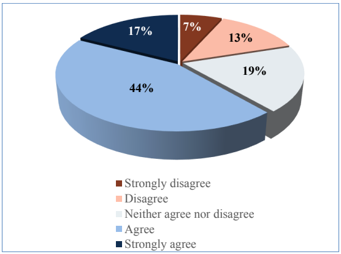
立体円グラフです。Strongly disagree 7%、Disagree 13%、Neither agree nor disagree 19%、Agree 44%、Strongly agree 17% です。凡例は Strongly disagree（まったくそう思わない、濃い赤）、Disagree（そう思わない、薄い橙）、Neither agree nor disagree（どちらともいえない、薄い灰色）、Agree（そう思う、薄い青）、Strongly agree（強くそう思う、紺）です。
Figure 21: Agreement for team having the right mix of knowledge and skills (n=75)
図 21: チームに適切な知識とスキルの組み合わせが備わっていることへの同意（n=75）
We found a statistically significant difference in responses between participants in departments and sub-components (z = 2.396) and departments and independent agencies (z = 2.506). Participants who agreed/strongly agreed that they had the right mix of skills totaled 86% of 22 participants in departments as compared to sub-components with 52% of 23 participants and independents with 50% of 30 participants.
原本PDFの抜粋画像
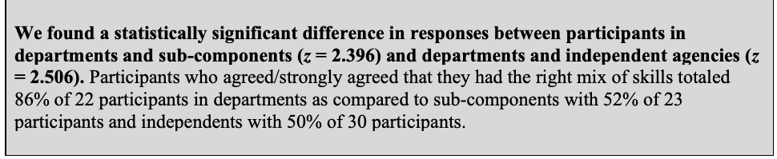
省庁の参加者と下部組織の参加者との回答の差（z = 2.396）、および省庁の参加者と独立機関の参加者との回答の差（z = 2.506）は、統計的に有意でした。適切なスキルの組み合わせがあることに同意または強く同意した参加者は、省庁では22名中86%でした。これに対し、下部組織では23名中52%、独立機関では30名中50%でした。
Several participants believed that organizations should have multidisciplinary teams if possible:
複数の参加者が、可能であれば組織は多分野にわたるチームを持つべきだと考えていました。
“I would say that if you're going to be producing any type of awareness content in any type of volume above the bare-bones minimum, you need a team because in the current environment, there's all kinds of ad hoc items that come about…There's no way one person can do it without a lot of backup.” (D06)
「必要最低限を大きく超える量で、何らかの意識向上コンテンツを作成するのであれば、チームが必要だと私は思います。現在の環境では、臨時の案件が次々と出てくるからです……。十分な支援なしに、一人でそれらをこなすことはできません。」（D06）
“That's the purpose of having a contractor. You can bring on all those pieces that you need to have a program…I have industrial design specialists. I have people who can design, are very artful, creative people. I have people who can run a learning management system, technical. I have good project managers. I have cybersecurity professionals.” (D01)
「それが契約業者を置く目的です。プログラムに必要な要素をすべて取り込めます……。産業デザインの専門家がいます。デザインができ、芸術的で創造性豊かな人たちがいます。ラーニングマネジメントシステムを運用できる技術者がいます。優れたプロジェクトマネージャーもいます。サイバーセキュリティの専門家もいます。」（D01）
“Have a diverse team relating to experience.” (Q25)
「経験の面で多様なチームを持つこと。」（Q25）
However, not all organizations have the resources to build teams with the desired mix of skills. Therefore, they often augmented the security awareness team by involving others in the organization:
しかし、望ましいスキルの組み合わせを備えたチームを構築するリソースがない組織もあります。そのため、組織は組織内の他の人々を関与させて、セキュリティ意識向上チームを補強することがよくあります。
“I partner with our internal communication group on a lot of activities to lean on their communication expertise.” (D05)
「多くの活動で、社内のコミュニケーション部門と連携して、彼らのコミュニケーションの専門性を頼りにしています。」（D05）
“We depend on pulling in other resources to help with [the security awareness program], and that, again, goes back to being tied to the threat team and to the policy team.” (D03)
「[セキュリティ意識向上プログラム]を支援してもらうため、他の人員や資源の協力を得ています。これはまた、脅威チームやポリシーチームとの連携につながります。」（D03）
“We also have a cyber guardians program, which is an ambassador program, so to speak, where we have people across the country…that actually take a look at their facilities. If they see things that aren't right, they approach the employee and let them know that you shouldn't be plugging in a USB device or anything into the company computer. If they walk away from their computer, leave it unlocked, they address that. And sometimes we use little cards to remind them, like a tent card that we might set on their desk.” (N05)
「サイバーガーディアンズ・プログラムという、いわばアンバサダープログラムもあります。全国各地にいる人たちが、それぞれの施設を実際に確認します。問題がある点を見つけたら従業員に声をかけ、会社のコンピュータにUSBデバイスなどを接続すべきではないと伝えます。コンピュータから離れる際にロックを解除したままにしている場合も、注意を促します。ときには、机の上に置くテントカードのような小さなカードを使って、注意を促します。」（N05）
“There was also someone else that came on the team part time…that had the HR experience. So, they were very helpful in helping me to navigate whatever issues that may come from the personnel requirements and so forth.” (N09)
「人事の経験がある人が、パートタイムでチームに加わったこともありました……。人員要件などから生じる可能性のある問題に対処するうえで、とても助けになりました。」（N09）
4.3 Professional Development
4.3 能力開発
4.3.1 Professional Development Activities
4.3.1 能力開発活動
Participants selected the professional development activities that have helped them gain the knowledge and skills needed for their security awareness roles. Figure 22 shows the frequencies of each activity. Self-study was the most popular activity (85%), followed by computer-based courses (79%), and conferences (76%). Fewer participants selected college courses (43%). Only 7% said that they had not engaged in any professional development activities.
参加者は、セキュリティ意識向上の役割に必要な知識とスキルを得るのに役立った能力開発活動を選択しました。図 22 に各活動の頻度を示します。最も多かったのは自己学習（85%）で、次いでコンピュータベースの講座（79%）、カンファレンス（76%）でした。大学の講座を選んだ参加者はそれより少数でした（43%）。能力開発活動にまったく取り組んでいないと答えたのは 7% のみでした。
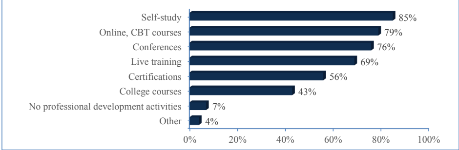
横棒グラフです。上から順に Self-study（自習）85%、Online, CBT courses（オンライン、CBTコース）79%、Conferences（カンファレンス）76%、Live training（ライブ研修）69%、Certifications（資格認定）56%、College courses（大学の講座）43%、No professional development activities（能力開発活動なし）7%、Other（その他）4%です。横軸の目盛りは0%から100%まで20%刻みです。
Figure 22: Professional development activities (n=75)
図 22: 能力開発活動（n=75）
We note that while 56% indicated they engaged in certification activities to help them in their security awareness roles, this percentage differs from the 93% who said they had at least one industry-recognized certification (as reported in section 3.3.3). This may be because not all certifications are directly applicable to the security awareness role.
56% が、セキュリティ意識向上の役割に役立てるために資格取得の活動に取り組んだと回答しましたが、この割合は、業界で認められた資格を少なくとも 1 つ持っていると答えた 93%（3.3.3 節で報告）とは異なります。これは、すべての資格がセキュリティ意識向上の役割に直接適用できるわけではないためかもしれません。
Several participants offered advice on the need for professional development:
複数の参加者が、能力開発の必要性についてアドバイスを寄せました。
“Continue to seek outside security awareness training and professional development activities.” (Q91)
「外部のセキュリティ意識向上トレーニングや能力開発活動を、引き続き探してください。」（Q91）
“It can be overwhelming at first but remember you are a sponge and try to soak up the various information that is available to you to fully understand your role and responsibility to educate others.” (Q32)
「最初は圧倒されるかもしれませんが、自分はスポンジだと考えて、利用できるさまざまな情報を吸収し、他の人を教育するという自分の役割と責任を十分に理解するようにしてください。」（Q32）
“Learn from peers who have already done it (networking, conferences, training).” (Q43)
「すでに経験した同業者から学ぶこと（ネットワーキング、カンファレンス、トレーニング）。」（Q43）
4.3.2 Adequacy of Professional Development Opportunities
4.3.2 能力開発の機会の適切性
We asked participants to rate their agreement with the following statement: “In my organization, I have been provided adequate professional development opportunities to help me in my security awareness role” on a five-point scale ranging from “strongly disagree” to “strongly agree.” Seventy percent agreed or strongly agreed that they were provided with adequate opportunities, and only 17% disagreed/strongly disagreed (Figure 23).
参加者に、「私の組織では、セキュリティ意識向上の役割に役立つ適切な能力開発の機会が提供されている」という記述への同意の程度を、「まったく同意しない」から「強く同意する」までの 5 段階で評価するよう依頼しました。70% が、適切な機会が提供されていることに同意または強く同意し、同意しないまたはまったく同意しないと回答したのは 17% のみでした（図 23）。
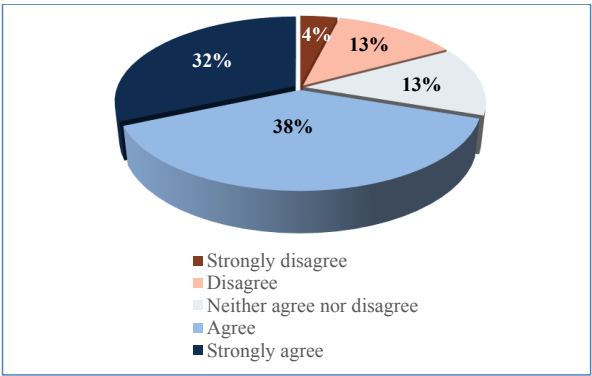
立体円グラフ：まったくそう思わない4%、そう思わない13%、どちらともいえない13%、そう思う38%、強くそう思う32%。凡例：まったくそう思わない（濃い赤）、そう思わない（薄い橙）、どちらともいえない（薄い灰色）、そう思う（薄い青）、強くそう思う（濃い青）。
Figure 23: Agreement for having adequate professional development opportunities (n=76)
図 23: 適切な能力開発の機会があることへの同意（n=76）
No statistically significant differences were found between groups (organization type, program size, team size).
原本PDFの抜粋画像
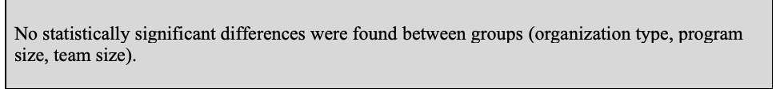
グループ間（組織の種類、プログラムの規模、チームの規模）で、統計的に有意な差は見られませんでした。
A few participants expressed frustrations about trying to obtain training specific to their security awareness role:
自らのセキュリティ意識向上の役割に特化したトレーニングを受けようとすることに、不満を述べた参加者も少数いました。
“They don't let me do training so much anymore. They won't spend any money on me…So, I'm constantly looking for free education and expanding my base that I already have.” (S05)
「最近では、あまりトレーニングを受けさせてもらえません。私にはお金をかけてくれないんです……。だから、無償で受けられる教育の機会を絶えず探し、すでに持っている基盤を広げています。」（S05）
“Our agency recently obtained licenses within an online learning service…They have training that is associated with each of the NICE cybersecurity work rules. Right. So, I was like, ‘Okay, great, I'm going to go find my work role,’ which is that learning coordinator one, and I was like, ‘Let me see what training they have.’ That was the one role that they didn't have any courses associated with. And when I asked the question, I was like, ‘Was this an oversight?’ They [were] like, ‘No.’ It was just so mile-wide, inch-deep type of stuff that they really didn't have courses for this role.” (S08)
「うちの機関は最近、オンライン学習サービスのライセンスを取得しました……。NICE のサイバーセキュリティの各 Work Role に関連づけられたトレーニングがあります。それで、『よし、自分の Work Role を探そう』と思いました。私のは learning coordinator のほうですが、『どんなトレーニングがあるか見てみよう』と思いました。ところが、その役割だけは関連する講座がまったくありませんでした。『これは見落としですか』と尋ねると、『いいえ』とのことでした。幅は広いものの奥行きのない内容で、この役割向けの講座は本当になかったのです。」（S08）
5 Key Takeaways
5 主な要点
In this section, we summarize key findings from the study results related to security awareness professionals’ backgrounds, knowledge, and skills.
本節では、セキュリティ意識向上担当者の経歴、知識、スキルに関する調査結果から得られた主な知見をまとめます。
5.1 Security Awareness Professional Work Roles
5.1 セキュリティ意識向上担当者の職務上の役割
Excluding executive classifications (CISO, Chief Information Officer - CIO), most survey participants were IT Specialists (Cybersecurity) or supervisors in that same job series, suggesting a commonality across the federal security awareness professionals represented in the study.
幹部の職種区分（CISO、最高情報責任者 - CIO）を除くと、調査参加者の大半は IT Specialist (Cybersecurity) か、同じ職系の監督者でした。このことは、本調査に参加した連邦のセキュリティ意識向上担当者の間に共通性があることを示唆しています。
However, commonalities in assigned NICE Framework Work Roles were not as apparent. Half of survey participants indicated that they either were not assigned to a NICE Framework Work Role or that they did not know if they were assigned. A 2018 OPM memo mandated that federal agencies “are required to identify and code Federal positions performing information technology, cybersecurity or other cyber-related functions…The position coding is based on the work roles described in the NICE Framework” [OPM]. Assuming that organizations have indeed met the requirements in the OPM memorandum, our findings may suggest that organizations have not adequately communicated Work Roles to their security awareness workforce. This may have professional development implications in that, without a Work Role reference, individuals and organizations may not know what knowledge and skills are necessary for security awareness jobs or how to gauge qualifications when hiring people to these positions.
しかし、割り当てられている NICE フレームワークの Work Role の共通性は、それほど明らかではありませんでした。調査参加者の半数は、NICE フレームワークの Work Role が割り当てられていない、または割り当てられているかどうか分からないと回答しました。2018年の OPM の覚書は、連邦機関に対し、「情報技術、サイバーセキュリティ、その他のサイバー関連の機能を担う連邦の職位を特定し、コード化することを求める……。職位のコード化は、NICE フレームワークに記述された Work Role に基づく」と義務づけています [OPM]。組織が OPM の覚書の要件を実際に満たしていると仮定すると、今回の調査結果は、組織がセキュリティ意識向上の担当者に Work Role を十分に伝えていないことを示唆している可能性があります。これは能力開発にも影響を及ぼしうるものです。Work Role という拠り所がなければ、個人も組織も、セキュリティ意識向上の職務にどのような知識とスキルが必要か、また、それらの職位に人を採用する際に資格をどのように判断すればよいかを、把握できない可能性があるためです。
Those participants who knew their NICE Framework Work Roles indicated 11 different Work Roles (individuals may be assigned to more than one Work Role), not including those who selected the “other” option. We acknowledge that not all identified Work Roles may have directly applied to security awareness duties since most participants have other job duties. However, we found that there was no single Work Role assigned to a majority of participants, with information system security manager (ISSM) coming the closest (40% of participants having that Work Role). This finding may suggest a lack of standardization in how federal organizations interpret the NICE Framework Work Roles in the context of security awareness.
自らの NICE フレームワークの Work Role を把握していた参加者は、「その他」の選択肢を選んだ人を除いて、11 種類の異なる Work Role を挙げました（個人が複数の Work Role を割り当てられている場合があります）。参加者の大半は他の職務も担っているため、特定された Work Role のすべてがセキュリティ意識向上の職務に直接当てはまるとは限らないことは認めます。しかし、参加者の過半数に割り当てられている単一の Work Role は存在せず、最も近いのは情報システムセキュリティマネージャー（ISSM）で、参加者の 40% がその Work Role を持っていました。この結果は、連邦組織がセキュリティ意識向上の文脈で NICE フレームワークの Work Role をどのように解釈するかについて、標準化が欠けていることを示唆している可能性があります。
5.2 Diversity of Disciplines, Knowledge, and Skills
5.2 分野、知識、スキルの多様性
A substantial number of participants in both the focus groups and survey held formal degrees in non-computing disciplines, demonstrating the educational diversity represented in the federal security awareness community. The vast majority of participants had worked in the cybersecurity and IT fields, with smaller percentages having worked in other fields that may be of benefit as a security awareness professional, such as communications, human resources, or graphic design.
フォーカスグループと調査の両方で、かなりの数の参加者が、コンピューティング以外の分野の正規の学位を持っていました。これは、連邦のセキュリティ意識向上コミュニティに見られる学歴の多様性を示しています。参加者の大多数はサイバーセキュリティと IT の分野で働いた経験がありましたが、それより少ない割合で、コミュニケーション、人事、グラフィックデザインなど、セキュリティ意識向上担当者として役立つ可能性のある他の分野で働いた経験がある参加者もいました。
Forty percent had only worked in a technical field. Industry experts have suggested that enlisting only technical people to work in security awareness may be problematic since highly technical people often have a difficult time presenting security information in a way that is understandable to non-technical people [SANS]. However, our study does not attempt to gauge the level of communication skill among participants, so it is unknown as to whether the technical backgrounds may be a detriment within the surveyed organizations.
原本PDFの抜粋画像
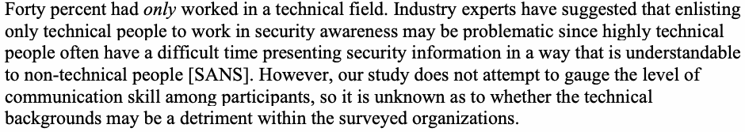
40% は、技術分野のみで働いた経験がありました。業界の専門家は、技術に精通した人は、セキュリティ情報を技術者ではない人にも分かる形で提示するのに苦労することが多いため、セキュリティ意識向上の業務に技術者だけを充てることは問題になりうると指摘しています [SANS]。ただし、本調査は参加者のコミュニケーションスキルの水準を測ろうとするものではないため、調査対象の組織内で技術的な経歴が不利に働いているかどうかは不明です。
While technical knowledge and skills in cybersecurity and IT were unsurprisingly rated highly by almost all participants, professional skills – especially communication, creativity and adaptability, interpersonal, and knowledge of policies and organizational context – were also seen as of high or moderate importance for security awareness teams. Privacy knowledge and skills were also highly rated, which reflects the growing trend of many security awareness teams now taking on privacy training responsibilities.
サイバーセキュリティと IT の技術的な知識とスキルは、当然ながらほぼすべての参加者から高く評価されましたが、専門的なスキル、特にコミュニケーション、創造性と適応力、対人スキル、ポリシーと組織の文脈に関する知識も、セキュリティ意識向上チームにとって重要度が高いまたは中程度とみなされました。プライバシーの知識とスキルも高く評価されており、これは、現在多くのセキュリティ意識向上チームがプライバシートレーニングの責任を担うようになってきている傾向を反映しています。
5.3 Building a Team with the Right Skills
5.3 適切なスキルを備えたチームの構築
Since it may be difficult to find one individual who has all the desired knowledge and skills, having a discipline-diverse security awareness team was viewed as beneficial. Over half of survey participants agreed that their security awareness teams had the right mix of knowledge and skills, although participants in departments were more likely to agree than their counterparts from sub-component and independent agencies. This may be because departments have more staff resources to contribute to the program.
望ましい知識とスキルをすべて備えた個人を 1 人見つけることは困難な場合があるため、分野の多様なセキュリティ意識向上チームを持つことが有益とみなされました。調査参加者の半数超が、自らのセキュリティ意識向上チームに適切な知識とスキルの組み合わせが備わっていることに同意しましたが、省庁の参加者は、下部組織や独立機関の参加者よりも同意する傾向が強くありました。これは、省庁のほうがプログラムに貢献できる人的リソースが多いためかもしれません。
Building a team, as alluded to within the focus groups, was often achieved by hiring contract staff with specialized skills. However, many organizations may not have the resources to hire an entire team, as evidenced by the third of represented organizations having only one or two individuals assigned to security awareness duties, as described in NISTIR 8420. Therefore, participants emphasized the importance of establishing relationships with other organizational groups to draw on specialized expertise to aid the security awareness program.
フォーカスグループで示唆されたように、チームの構築は、専門的なスキルを持つ契約職員を雇うことで実現されることが多くありました。しかし、NISTIR 8420 で述べたように、参加組織の 3 分の 1 が、セキュリティ意識向上の職務に割り当てている人員が 1～2 名のみであることからも分かるように、多くの組織にはチーム全体を雇うリソースがない可能性があります。そのため、参加者は、セキュリティ意識向上プログラムを支援する専門知識を得るために、組織内の他のグループとの関係を築くことの重要性を強調しました。
5.4 Professional Development
5.4 能力開発
Survey participants indicated a variety of professional activities they engage in to help them in their security awareness roles, most commonly self-study, online courses, and conferences. While the majority agreed that their organizations provide them with adequate professional development opportunities, 30% were either neutral or did not agree. It is unknown if this is an organizational issue (e.g., leadership does not encourage/allow security awareness professionals to take training, lack of training budget) or if the problem lies in there not being sufficient training specific to the security awareness role.
調査参加者は、自らのセキュリティ意識向上の役割に役立てるために取り組んでいるさまざまな専門的活動を挙げ、最も多かったのは自己学習、オンライン講座、カンファレンスでした。大多数は、組織が適切な能力開発の機会を提供していることに同意しましたが、30% は中立か同意しませんでした。これが組織の問題（例: 経営層がセキュリティ意識向上担当者のトレーニング受講を奨励または許可していない、トレーニング予算の不足）なのか、それとも、セキュリティ意識向上の役割に特化したトレーニングが十分にないことが問題なのかは、不明です。
6 Moving Forward
6 今後の展望
Based on our findings, we offer the following suggestions and potential opportunities to address the most significant issues identified in our study.
調査結果に基づき、本調査で特定された最も重要な課題に対処するための提案と潜在的な機会を示します。
For those developing government-wide guidelines, policies, and sharing platforms:
政府全体のガイドライン、ポリシー、情報共有プラットフォームを策定する人々に向けて:
•Identify dedicated, standard Work Role(s) for security awareness professionals. NICE is currently exploring the addition of an awareness Work Role to the NICE Framework.
•セキュリティ意識向上担当者のための、専用の標準的な Work Role を特定します。NICE は現在、NICE フレームワークへの意識向上の Work Role の追加を検討しています。
•Develop training specifically geared towards helping security awareness professionals in their roles. Such training should go beyond technical, security topics and address professional skills necessary to be effective.
•セキュリティ意識向上担当者がその役割を果たすのを支援することに特化したトレーニングを開発します。そのようなトレーニングは、技術的でセキュリティに関する話題にとどまらず、効果を上げるために必要な専門的スキルにも対応すべきです。
For organizations with security awareness programs:
セキュリティ意識向上プログラムを持つ組織に向けて:
•Be open to hiring candidates from less-technical backgrounds.
•技術的な経歴がそれほど強くない候補者の採用にも前向きであること。
•Communicate NICE Framework Work Roles to the security awareness workforce.
•NICE フレームワークの Work Role を、セキュリティ意識向上の担当者に伝えること。
•If possible, build a team having all requisite skills, rather than trying to find all requirements in one or two individuals. While having a dedicated team may be preferred, for resource-constrained organizations, awareness professionals can be encouraged to collaborate with other organizational groups to draw on specialized expertise.
•可能であれば、1～2 名の個人にすべての要件を求めようとするのではなく、必要なスキルをすべて備えたチームを構築すること。専任のチームを持つことが望ましい場合もありますが、リソースに制約のある組織では、意識向上担当者が組織内の他のグループと協力して専門知識を活用するよう促すことができます。
•Support experiential and training opportunities for developing professional skills in addition to those that are technology focused. Afford security awareness professionals opportunities to share with other professionals via forums or conferences, (e.g., FISSEA).
•技術に重点を置いたものに加えて、専門的スキルを高めるための実践的な機会とトレーニングの機会を支援すること。セキュリティ意識向上担当者が、フォーラムやカンファレンス（例: FISSEA）を通じて他の専門家と情報を共有する機会を提供すること。
Acknowledgements
謝辞
The authors of this document would like to acknowledge those who have made this work possible. We would like to thank the federal employees who took time out of their busy schedules to participate in the focus groups and survey and provide their valuable perspectives. We would also like to thank the following individuals who provided valuable input and feedback on the study: Rodney Petersen, Marian Merritt, Danielle Santos, Karen Wetzel, Alen Kirkorian, Dan Jacobs, Sarah Moffat, Clarence Williams, and Daniel Eliot.
本文書の著者は、この研究を可能にしてくださった皆様に感謝いたします。多忙な日程の中、時間を割いてフォーカスグループと調査に参加し、貴重な見解を寄せてくださった連邦職員の皆様に感謝します。また、本調査に貴重な意見とフィードバックを寄せてくださった次の皆様（Rodney Petersen、Marian Merritt、Danielle Santos、Karen Wetzel、Alen Kirkorian、Dan Jacobs、Sarah Moffat、Clarence Williams、Daniel Eliot の各氏）にも感謝いたします。
References
参考文献
[BADA] Bada, M, Sasse, AM, Nurse, JRC (2019) Cyber Security Awareness Campaigns: Why Do They Fail to Change Behaviour? arXiv preprint. https://arxiv.org/ftp/arxiv/papers/1901/1901.02672.pdf
[BADA] Bada, M, Sasse, AM, Nurse, JRC (2019) Cyber Security Awareness Campaigns: Why Do They Fail to Change Behaviour? arXiv preprint. https://arxiv.org/ftp/arxiv/papers/1901/1901.02672.pdf
[FISSEA] National Institute of Standards and Technology (2021) FISSEA – Federal Information Security Educators. Available at https://csrc.nist.gov/projects/fissea
[FISSEA] National Institute of Standards and Technology (2021) FISSEA – Federal Information Security Educators. 入手先: https://csrc.nist.gov/projects/fissea
[INDEED] Indeed (2021) 15 Professional Skills (Plus Definition and Tips). Available at https://www.indeed.com/career-advice/career-development/professional-skills
[INDEED] Indeed (2021) 15 Professional Skills (Plus Definition and Tips). 入手先: https://www.indeed.com/career-advice/career-development/professional-skills
[OPM] U.S. Office of Personnel Management (2018) Guidance for Identifying, Addressing and Reporting Cybersecurity Work Roles of Critical Need. (U.S. Office of Personnel Management, Washington, DC). Available at https://chcoc.gov/content/guidance-identifying-addressing-and-reporting-cybersecurity-work-roles-critical-need
[OPM] U.S. Office of Personnel Management (2018) Guidance for Identifying, Addressing and Reporting Cybersecurity Work Roles of Critical Need. (U.S. Office of Personnel Management, Washington, DC). 入手先: https://chcoc.gov/content/guidance-identifying-addressing-and-reporting-cybersecurity-work-roles-critical-need
[SANS] SANS (2021). 2021 SANS Security Awareness Report: Managing Human Cyber Risk. Available at https://www.sans.org/security-awareness-training/resources/reports/sareport-2021/
[SANS] SANS (2021). 2021 SANS Security Awareness Report: Managing Human Cyber Risk. 入手先: https://www.sans.org/security-awareness-training/resources/reports/sareport-2021/
[STEWART] Stewart, G, Lacey, D (2012) Death by a Thousand Facts: Criticising the Technocratic Approach to Information Security Awareness. Information Management & Computer Security 20(1):29-38.
[STEWART] Stewart, G, Lacey, D (2012) Death by a Thousand Facts: Criticising the Technocratic Approach to Information Security Awareness. Information Management & Computer Security 20(1):29-38.
[WILSON] Wilson M, Hash J (2003) Building an Information Technology Security Awareness and Training Program. (National Institute of Standards and Technology, Gaithersburg, MD), NIST Special Publication (SP) 800-50. https://doi.org/10.6028/NIST.SP.800-50
[WILSON] Wilson M, Hash J (2003) Building an Information Technology Security Awareness and Training Program. (National Institute of Standards and Technology, Gaithersburg, MD), NIST Special Publication (SP) 800-50. https://doi.org/10.6028/NIST.SP.800-50
[WOELK] Woelk, B (2015) The Successful Security Awareness Professional: Foundational Skills and Continuing Education Strategies. EDUCAUSE Center for Analysis and Research. Available at https://library.educause.edu/~/media/files/library/2016/8/ erb1608.pdf
[WOELK] Woelk, B (2015) The Successful Security Awareness Professional: Foundational Skills and Continuing Education Strategies. EDUCAUSE Center for Analysis and Research. 入手先: https://library.educause.edu/~/media/files/library/2016/8/ erb1608.pdf
Appendix A—Acronyms
付録 A—略語
Selected acronyms and abbreviations used in this paper are defined below.
本書で用いている主な略語を、以下に定義します。
CIO Chief Information Officer
CIO 最高情報責任者（Chief Information Officer）
CISO Chief Information Security Officer
CISO 最高情報セキュリティ責任者（Chief Information Security Officer）
FISSEA Federal Information Security Educators
FISSEA 連邦情報セキュリティ教育者（Federal Information Security Educators）
FTE Full Time Equivalent
FTE 常勤換算（Full Time Equivalent）
ISSM Information Systems Security Manager
ISSM 情報システムセキュリティマネージャー（Information Systems Security Manager）
IT Information Technology
IT 情報技術（Information Technology）
NICE National Initiative for Cybersecurity Education
NICE サイバーセキュリティ教育に関する国家イニシアチブ（National Initiative for Cybersecurity Education）
NIST National Institute of Standards and Technology
NIST 米国国立標準技術研究所（National Institute of Standards and Technology）